VOL. LXVI.
PERADENIYA, FEBRUARY, 1926.
No. 2.
A delegation consisting of the Director of Agriculture and Messrs. M. L. Wilkins and J. Horsfall were deputed by the organizers of the Ceylon Tea Research Institute to visit the tea districts of Northern India in order to investigate the research work being carried out at Tocklai, Assam, by the Scientific Department of the Indian Tea Association and to ascertain how the results of this research work were being applied by the tea industry upon estates.
In the present number of the Tropical Agriculturist are included the reports on this visit and the attention of all interested in tropical agriculture is directed to these reports.
The work of the Tocklai Experiment Station, both in the field and in the laboratory, was closely investigated and special thanks are due to its Chief Scientific Officer and to the other members of the staff for the assistance afforded to the members of the deputation. Some points of special interest to Ceylon were discussed at great length and attention is drawn to those which refer to the investigations being made in respect of "quality" and to the relationship of certain soil conditions with the occurrence of certain diseases.
In Northern India it was seen that very special attention was given to the soil as it was felt that if sound agricultural practices were evolved less trouble would be experienced from pests and diseases. Difficulties in regard to weeds have to be met, but generally a greater amount of attention is paid to cultivation and to the use of green manures than is common upon Ceylon tea estates. It is admitted that the conditions of
66[FEBRUARY, 1926.soil and climate are very different, but the deputation was convinced that Ceylon should pay greater attention to its soil if the permanency of the tea industry is to be assured. The greater portion of the problems in tropical agriculture centre around the growth of the crop, and it is therefore of importance that the soil and the reaction of the plant to varying soil and climatic conditions should be carefully studied. It is becoming more and more realized that agricultural problems are often of great complexity and it is only when they are attacked from different aspects that their solution becomes possible.
The importance of the agricultural and of the chemical aspects of investigations for the tea industry of Ceylon are emphasized in the reports under consideration.
The methods of pruning, plucking and manufacture adopted by the tea gardens of Northern India differ greatly from those commonly practised in Ceylon. Details of these differences are given, in order that Ceylon planters may consider them. It was generally felt that the methods of withering and of manufacture in Ceylon were ahead of those in use in Northern India, but attention should be drawn to fermentation which is usually regarded as the most important process of manufacture and is done on the cement floors of large dark buildings.
The results of various manurial experiments were examined in detail and the depressing effects upon tea of large quantities of lime were seen. The markedly increased growth of green manures after small applications of lime were also observed and are worthy of more than a passing reference.
Tea in Northern India is generally grown under light, high shade. The best qualities of tea are made from estates with moderate shade. Growth is most luxuriant and in consequence the bushes are much larger than Ceylon bushes and are never pruned upon their individual merits. Flat plucking is rigidly adhered to. The tea season is a short one, as the total crop of the year is handled in 6—7 months. In consequence, factories are pushed to their utmost to manufacture the leaf as it comes in.
Conditions of the Ceylon tea industry differ greatly from those which prevail in Northern India but there are several matters upon which Ceylon would be advised to follow the progress of events in the neighbouring continent, and it is hoped that the fullest possible co-operation will exist between the Northern Indian Research Station and that which has just been established in this colony.
FEBRUARY, 1926.]67The Director of Agriculture and Messrs. M. L. Wilkins and J. Horsfall were invited by the Sub-Committee of the Planters' Association and the Estates Proprietary Association responsible for the inauguration of the Tea Research Scheme to proceed to Assam to investigate the work of the Scientific Department of the Indian Tea Association and the work of tea estates in North India. The object of the deputation was to study how the various scientific problems affecting the cultivation and manufacture of tea were being tackled, and how far the results of the investigations of scientific workers were being adopted by the industry. It was felt that such an enquiry would secure information which would be of value to the tea industry of Ceylon and particularly to the Board of Management of the Tea Research Institute about to be formed.
The deputation sailed on the s.s. "Domala" on October 25th and returned to Ceylon on November 27th. The headquarters of the Indian Tea Association at Calcutta were visited by the Director of Agriculture, whilst the Heads of various large firms interested in the Indian Tea Industry were interviewed by Messrs. Wilkins and Horsfall. The three of us then visited Tocklai, the seat of the offices, laboratories and experiment stations of the Scientific Department of the Indian Tea Association and certain estates in Jorhat, and subsequently Mr. M. L. Wilkins proceeded to estates in the Dooars and the Darjeeling districts and Mr. J. Horsfall visited Upper Assam.
The scientific work of the Tea Industry of India is carried out by the Scientific Department of the Indian Tea Association. This Department obtains the bulk of its funds from the Indian Tea Association which collects a special acreage tax from the estates owned by its members and from grants and subscriptions from the Governments of Assam and Bengal and District Planters' Associations. The estimates of the receipts for 1925 are as follows;—
| (a) | Indian Tea Association (Calcutta) | ... | Rs. 178,133 1 0 |
| (b) | United Planters' Association, Southern India, Madras (for 1924 Rs. 5,000, and for 1st half year 1925 Rs. 5,000) |
... | 10,000 0 0 |
| (c) | Government of Assam | ... | 10,000 0 0 |
| (d) | Government of Bengal | ... | 4,000 0 0 |
| (e) | Assam Branch | ... | 4,992 1 0 |
| (f) | Surma Valley Branch | ... | 2,745 0 0 |
| (g) | Dooars Planters' Association | ... | 2,500 0 0 |
| (h) | Darjeeling Planters' Association | ... | 500 0 0 |
| (i) | Terai Planters' Association | ... | 300 0 0 |
| (j) | South Indian Association, London £50 (1924) | .. | 750 0 0 |
| (k) | Sale of Books and Journals | ... | 4,000 0 0 |
| Total ... | Rs. 217,920 2 0 | ||
The grants by the Governments of Assam and Bengal are made in order that small growers may receive scientific advice and assistance when required.
The expenditure, which has been increased gradually during recent years as the demand developed for more scientific work, now amounts to about 7 annas ( cents) per acre and comprises about 80% of the total funds of the Indian Tea Association.
The total expenditure of the Department on capital account will stand at the end of 1925 at approximately Rs. 350,000. This has been incurred on building and equipment of laboratories, for buildings on the experiment stations and for housing of staff.
All the financial work of the Department is conducted in Calcutta at the Headquarters of the Indian Tea Association, and all accounts are kept there. The Chief Scientific Officer has a cash advance from which he pays the subordinate staff and labourers at Tocklai and all small miscellaneous expenses incurred there, and he submits a monthly statement of such expenditure to Calcutta. This latter office prepares a monthly expenditure statement, which is printed and circulated to the members of the Tea Association. A copy of such a statement is appended for the information of the Ceylon Tea Research Board.*
Meetings of the Scientific Department Sub-Committee of the Indian Tea Association are held fortnightly in Calcutta and all excesses on the votes for the Department have to receive the sanction of this Sub-Committee before they are incurred. This Sub-Committee has also the power to sanction adjustments between votes. Every quarter the Chief Scientific Officer attends a meeting of this Committee and reports on work that has been carried out during the period under consideration, and on the work at present in hand by the various scientific officers.
In the early days of the Scientific Department the staff consisted of one Scientific Officer and his Headquarters were in Calcutta. Subsequently another officer was added. Both these officers were chemists and paid special attention to soil problems and to problems of manufacture. It was subsequently decided that Calcutta was not a suitable centre for the Headquarters of the Scientific workers and Tocklai was established upon lands which were obtained from the Jorhat Company.
Tocklai dates from 1910 and comprises an area set aside for laboratories and bungalows and of 10 acres of tea under experiments. The buildings at present consist of (1) the Administration building, (2) the Chemical laboratory, (3) the Entomological laboratory and (4) the Mycological and Bacteriological laboratories. It was also found that a large area of land was required, for field experiments and a special grant of land was secured at Borbhetta about miles away from Tocklai. Of this land, 40 acres have been fully opened and divided into experimental blocks—the principal plantings having been done in 1916, 1920 and 1921.
The administration building and the laboratories are more or less uniform in type, the internal arrangements differing in order to suit the
* Not reproduced.—Ed. T. A.
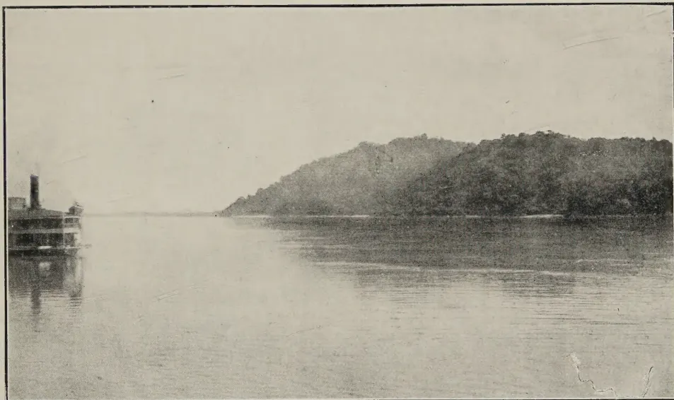
Fig 1. CROSSING THE BRAHMAPUTRA
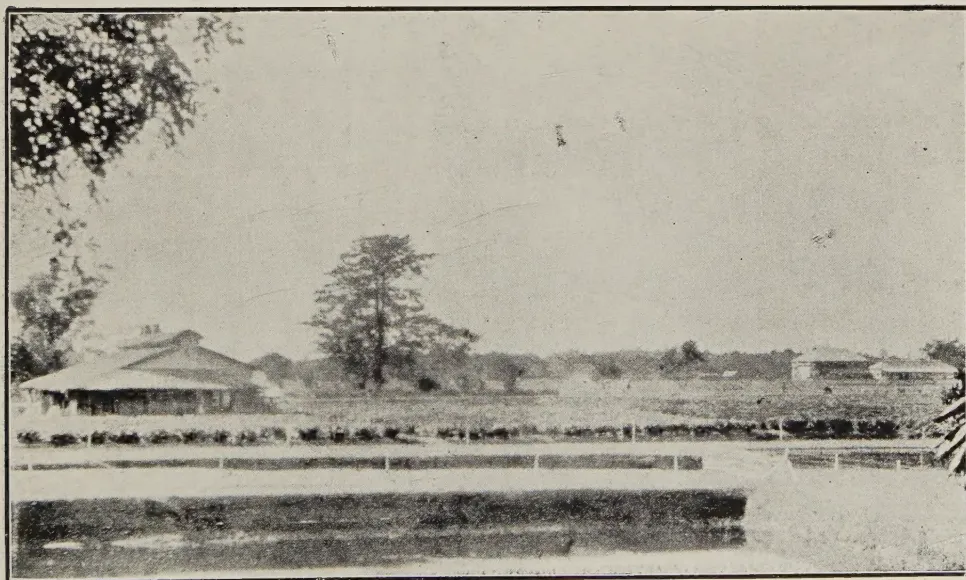
Fig 2. EXPERIMENTAL PLOTS—TOCKLAI
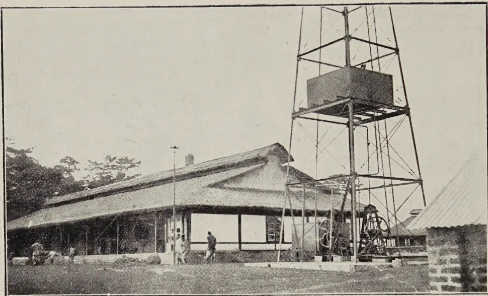
Fig 3. CHEMICAL LABORATORY—TOCKLAI
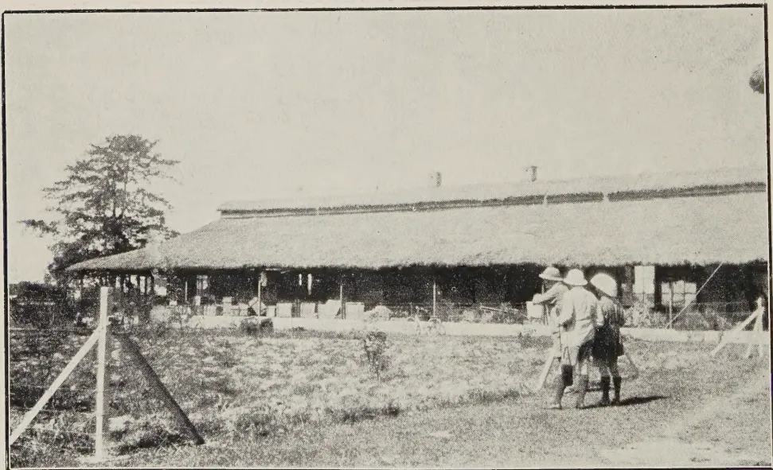
Fig 4. PART OF THE MYCOLOGICAL LABORATORY—TOCKLAI
FEBRUARY, 1926.]69particular requirements of the various branches of work. The administration building provides for office accommodation for the Chief Scientific Officer and the clerical staff, and a large hall which is utilized for the lecture courses for estate managers and assistants which are now held annually. The chemical laboratory is the oldest building and will require to be enlarged if the chemical work continues to increase at the rate that it has done during the past two or three years. The mycological laboratory and the entomological laboratory are new buildings. In the former the newly appointed bacteriologist is to be housed and attached to the latter is an insectary. Photographs of those various buildings are appended hereto and rough sketch plans were made for the information of the Tea Research Scheme if required.
The buildings are steel frame buildings with brick walls and are covered with corrugated iron roofing covered with thatch.
The staff of the Scientific Department now consists of the Chief Scientific Officer (Chemist), three Chemists, one Entomologist, one Mycologist and one Bacteriologist. The enlargement of the staff in recent years was found to be necessary on account of the complexity of certain of the problems which required investigations and was especially brought about by the Mosquito pest requiring detailed bio-chemical investigations when the entomological side of the problem had been exhaustively studied. It was emphasized by members of the Administrative Sub-Committee of the Indian Tea Association responsible for the control of the Scientific Department and by the staff at Tocklai itself, that Ceylon would be wise to start its Research Institute with as complete a staff as possible from the outset rather than build it up gradually as had been done at Tocklai. So many agricultural problems require co-operative team work of a number of scientists and unless those various specialists are available progress must be slow and often unsatisfactory. The subordinate staff at present consists of 4 Assistant Chemists and 4 Analysts in the Chemical branch, one Assistant Entomologist and one Insectary Assistant in the Entomological Branch; one Assistant Mycologist, one Senior Laboratory Assistant and 6 Junior Laboratory Assistants in the Mycological branch, one Assistant in the Bacteriological laboratory; and one Field Assistant in the Field Branch. Some of those Assistants are graduates of Indian Universities, but others have been trained at Tocklai itself.
Staff Officers are appointed upon agreements drawn up and signed in Calcutta. The agreements are continuous but are renewable at definite periods. Leave is granted on full pay after every three ho. weathers in Assam. This leave is for 6 months from the date of leaving Calcutta and a passage equivalent to 1st Class P. & O. from Calcutta is granted to the officers—the return passage being granted if the agreement is renewed. These passages at present are provided only for the officers themselves, but they anticipate that as the Government of India has adopted the recommendations of the Lee Commission regarding passages for the Indian Service there will be an improvement in this connection. The salary scale of officers is equal to that of Indian Government Agricultural Service with free quarters and an addition of Rs. 100–120 per mensem in lieu of pension rights. The minute of the Chairman of the Indian Tea Association on this subject is appended for the information of the Ceylon Tea Research
70[FEBRUARY, 1926.Board.* The pay of the subordinate officers corresponds to certain Indian Scales, but are lower than what would have to be provided in Ceylon for assistants of similar training and educational qualifications.
The work of the different branches was investigated thoroughly, and we desire to take this opportunity to state that the Tea Industry of Ceylon owes its special thanks to Mr P. H. Carpenter, the Chief Scientific Officer and the staff at Tocklai for the manner in which they placed all information concerning their work for the Indian Tea Industry at our disposal and for the frank manner in which they answered the various questions raised by us during our lengthy discussions on this work. It is impossible here to detail these various discussions but the following notes may not be without interest.
All correspondence goes through the Chief Scientific Officer, and all reports from the officers in the various branches are made to him. These reports or extracts from them, if the Chief Scientific Officer considers desirable, are transmitted to the Tea Estates. All correspondence is with the Tea Estates as it has been the desire of the Scientific Department to keep in the closest touch with Managers of estates and to encourage them to send their problems to it for solution. At the end of every month, each branch has to submit to the Chief Scientific Officer a monthly report covering all the work and investigations of that period. These reports are scrutinized by the Chief Scientific Officer and submitted with a covering report to the Calcutta Sub-Committee for the confidential information of members. The names of all tea estates are omitted from these reports as it has been found in practice that it was desirable to do so.
In the filing system, the correspondence with each garden is kept separate.
All laboratories are fitted with gas generated by weight driven petrol gas plants, but electricity was at the time of our visit being also installed throughout.
Analyses of soils and manures are not at the present time carried out by the Department except in so far as they relate to special problems and investigations on which the Department is engaged. This has been found to be necessary as otherwise this work would tend to swamp all research. Soil analyses are now carried out by Analysts in Calcutta, but the Tocklai Authorities fix the analytical methods to be used in order that uniformity of methods may be secured and the interpretation of the figures from the various analysts made possible. The methods are changed from time to time as circumstances demand and check samples are periodically analysed by Tocklai in co-operation with the various analysts. The advice of Tocklai for manuring programmes is sought by all Agencies having Tea Estates in Assam and the rotation of manures recommended varies with the district and estate conditions. A five-year rotation is a common manuring programme recommended somewhat on the following lines :—
* Not reproduced. Ed. "T. A."
FEBRUARY, 1926.]71The results of applications of lime in tea were fully discussed and the experimental work on the Tocklai and Borbhetta Experimental Stations was subsequently inspected.
The beneficial results of lime applications on the growth of green manure were seen and the depressing effect of heavy dressings of lime on tea was also most marked at Tocklai. The results of these experiments have recently been published in the Quarterly Journal of the Indian Tea Association Part 1, 1925, and reproduced in the Tropical Agriculturist, Vol. LXV, No. 3 (September—1925). The lime used in Assam is usually ground lime stone and occasionally burnt lime stone. Finely ground lime stone appears to be more favoured than burnt lime stone.
The work on what constitutes quality in tea was interesting and it is at present held that the best quality is obtained when there is a long length of old wood, and a short flush and from crop grown under medium shade. The acidity of Assam soils was also discussed. A considerable amount of work has been done on this question, but the full significance of the results is not yet understood.
The work of the Entomologist on mosquito blight and his potash work were fully discussed. The bio-chemical problems which arose in this investigation have led to an expansion of the staff of the Department. The mosquito blight problem has been a difficult one and has required lengthy research. The various nettle grubs and bag worms on Indian Tea estates were examined and discussed. Shot-hole borer is not found in Indian tea and the Indian species of Tortrix—Homona menciana—does not do much damage. Enquiries were made as to whether parasites of this species were known but Mr. Andrews stated that he not did know of this pest being parasitized. Information was also sought regarding scale insects affecting tea, but these appear to be rare. Mr. Andrews informed us that they often did considerable damage to coffee in South India, but that this was generally much less on heavily shaded properties. It is therefore worth consideration whether the green bug problem in the Haputale district might not be met by an increase in shade.
The work that has been done in India with spraying tea was also discussed and the use of lime and sulphur was recommended as the materials were cheap and easily obtainable. Spraying is now adopted by a number of estates in Assam.
The insectory attached to the Entomological branch was well equipped and some notes of this equipment were made by the Director of Agriculture.
The first question discussed with the Mycologist was the Tea blister blight. This is now found in all districts except Cachar and Sylhet. In some districts the disease occurs only in certain gardens and it was generally rare around Jorhat. No garden could be said to be free unless it had been specially inspected. In some areas spraying with lime-sulphur was now generally employed for the control of this disease and considerable losses occurred unless this was done. Mr. Tunstall stated that he considered that live spores would not travel for very considerable distances
72[FEBRUARY, 1926.nor did they thrive when temperatures were high. The Director of Agriculture is, however, convinced that Ceylon would be very unwise to commence the re-importation of Indian tea seed as the introduction of blister blight into this island might be disastrous to the tea industry—especially up-country. Tea seed is still exported to Java but this has to be accompanied by a certificate from the Scientific Department of the Indian Tea Association. The work of examining this seed was being carried out by the Entomological and Mycological branches at Tocklai during our visit, and we were all impressed by the thorough manner in which this was being done by the Entomologist and the Mycologist.
It is expected that over 100 consignments of seed will be examined this season and as the charge is Rs. 100 per consignment—the revenue from this work to the Station amounts to more than Rs. 10,000. In view of the importance of safeguarding Ceylon tea from the introduction of pests we recommend that Government should amend its Plant Pests Regulations so that certificates as to freedom from pests and diseases be required from a properly constituted scientific department with all tea seed introduced into Ceylon from Java and Sumatra.
Branch Canker.—The North Indian types are not the same as Ceylon and almost invariably are the consequence of bad pruning. The South Indian type more closely resembles the Ceylon trouble.
Diplodia is common in some districts but it can be checked by application of potash. It occurs very frequently on soils where phosphoric acid is in excess or more probably where the ratio of potash to phosphoric acid is not satisfactory.
Where Sphaerostible occurs soil conditions are invariably unsatisfactory. It is generally worse on soils with a high acidity.
Various forms of thread blights were also examined and discussed. Brown blight occurs commonly where excesses of soluble nitrogen have been employed, but this can be corrected by applications of potash.
The Mycologist impressed us with his belief that in Assam diseases become prevalent when the bushes are of low vitality or are becoming moribund as the result of faulty cultivation, pruning or manuring, and that where these conditions are rectified matters invariably improve. He personally had considerable faith in the use of manures—particularly nitrogen and potash—in the treatment of certain diseases and in the use of lime and sulphur spray in the control of others. Much heavier yields have been secured from sprayed areas and it is thought that the use of sulphur as a manure is worth investigation as it has undoubtedly produced marked effects on alkaline soils.
Interesting work on certain factors associated with quality has also been recently undertaken, but as these have not reached any definite stage further reference to this work cannot be made.
At Tocklai, tests of the yields of different jats of tea and of pruning were being investigated. A further series of pruning experiments was also being carried out, and also the effect of lime on tea was being experimented
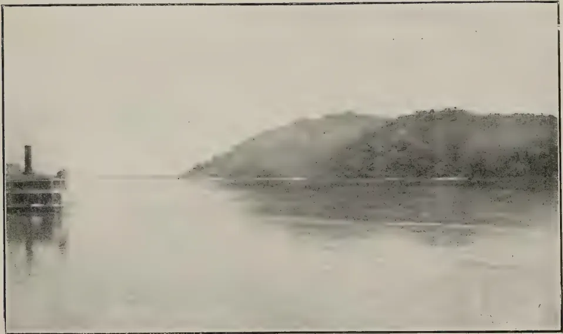
Fig 1. CROSSING THE BRAHMAPUTRA
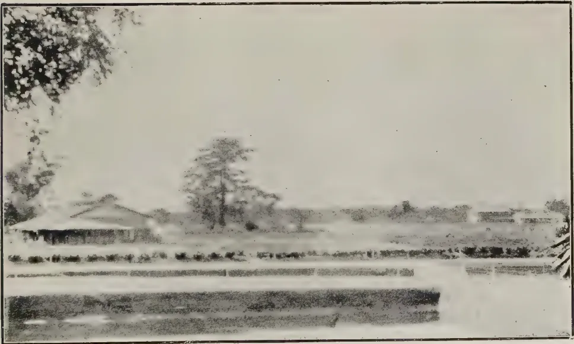
Fig 2. EXPERIMENTAL PLOTS—TOCKLAI
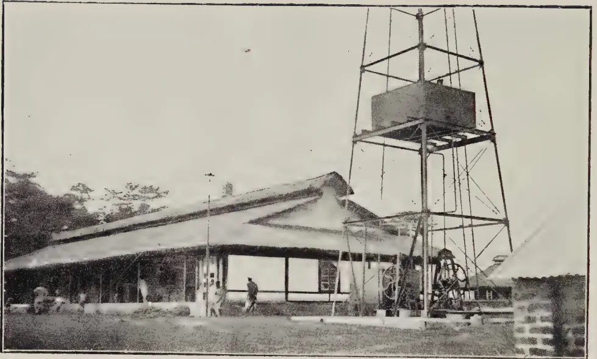
Fig 3. CHEMICAL LABORATORY—TOCKLAI
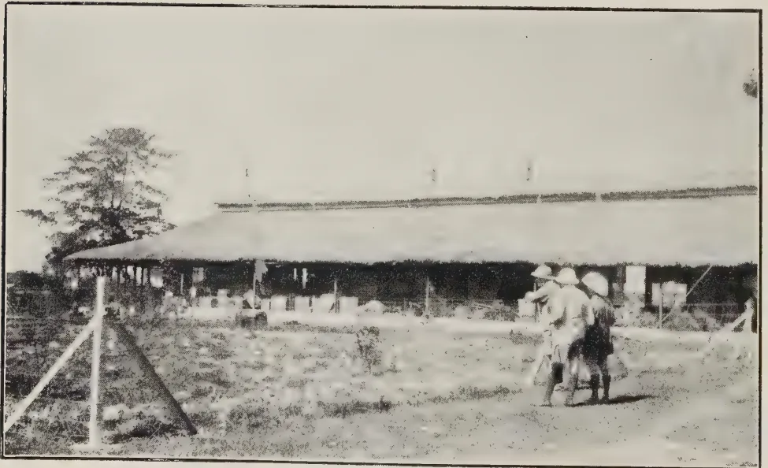
Fig 4. PART OF THE MYCOLOGICAL LABORATORY—TOCKLAI
FEBRUARY, 1926.]73with. Seed bearers—spaced 16 feet apart—attracted our attention. They are pruned every year to maintain a pyramidal shape of bush. It is thought that the results from seeds of comparatively young tea seed bearers are better than those from very old trees, particularly if these have not been carefully cultivated and attended to. A study of the different jats of tea was interesting, and the changes that may occur with differing cultivation were also brought to our attention.
At Borbhetta, green manure plots have been carefully laid down. These are in plots of 72 bushes, and the manurial treatment of each plot is repeated 5 times in order to make it possible to reduce the experimental errors common to all field experiments. For two years previous to beginning the experiments the initial fertility of the different plots is taken. Cultivation experiments are also being conducted and the best plots are those which receive one deep hoeing and 3 shallow hoeings per annum, and the clean weeded plots with shallow hoeings. Pruning experiments with various forms of nitrogen are also being carried out. The nitrogen experiments at the present show the best results in the following order: (1) sulphate of ammonia: (2) nitrate of soda: (3) and green manures. For green manure Boga medeloa is grown in separate plots and added to the plots under treatment. It is thought that methods of treatment may effect considerable changes in what is known as jat and experiments to test these are being conducted. The plots on both stations have been very carefully laid out on very uniform flat alluvial soil, and the growth of the tea is throughout as uniform as could possibly be hoped for. Even under these conditions, the individuality of the different bushes and the difficulties of experimenting with a permanent crop which require weekly yields to be recorded have made it necessary to take at least two years' initial yields and renders it impossible to arrive at definite conclusions until the records of at least five years are available from a sufficiently duplicated number of plots.
Albizia stipulata is the green manure tree most commonly employed in Assam and affords a reasonably high shade. Others which attracted our attention were Derris robusta and Dalbergia Assamica. The Director of Agriculture proposes to secure seed of these in February or March next and will be pleased to book any orders, from estates in Ceylon which desire to experiment with them. At Tocklai, in the experimental plots there is no shade at all, so that shade factors and other complications are avoided. When Boga is grown in tea as a green manure, better results have been obtained when it has been left during the dry weather than when it has been cut out. Boga is now usually cut out after the drought. This result is probably due to the effect of the sun on the soil and to increases of soil temperatures. Any excess of evaporation from the soil by the boga is certainly counterbalanced by the shading effect during dry weather, and it is only in a certain few particular soils that tea appears to suffer during drought if there is no adequate cover of shade or green manure plants.
During our visit to Tocklai preparations were being made for the fourth of the series of lecture courses for estates managers and assistants. These consist of weekly courses for three consecutive weeks in November and
74[FEBRUARY, 1926.early in December. Twenty are received in each batch or sixty each year. They are housed in temporary housing accommodation and mess at the Jorhat Club. The number of applicants for this year's course was 250, but the allocation is done in Calcutta and care is taken to have each tea district represented in each batch so that the fullest discussion possible may follow each lecture. A copy of the programme drawn up for this year is appended. This programme is drawn up at Tocklai and copies of this together with the abstracts of lectures are given to those attending the courses on arrival. Each course is made complete in itself and the lectures are given in simple language—technical terms being used as little as possible.
These courses have become popular and could be usefully followed in Ceylon. The Director of Agriculture has seen the results of similar courses of lectures in the West Indies and Mauritius, and there is little doubt that they stimulate interest in scientific research and are a means of bringing the worker into close touch with the practical man and his problems.
The expenses of estates managers and the assistants attending these lectures are paid by their respective employers.
The extension of the work of the Scientific Department which is at present taking place consists of the commencement of bacteriological work, particularly in regard to the manufacture and quality of tea. A small sub-station is being opened in the Dooars and will be under the charge of an ordinary officer from that district, and a larger station has been selected for South India. This will be opened early next year and the officer who has been selected to take charge of this station was working at Tocklai at the time of our visit in order to familiarize himself with all the results obtained at that station prior to taking over work in South India. This station in South India will be in all about 40 acres in extent, as it was thought that South Indian tea problems differed considerably from those of North India and would require a larger station than was being laid down for the sub-stations contemplated for North Indian districts. This larger station is however to be developed gradually and is being assisted by a fairly substantial grant-in-aid from the Government of Madras.
The Ceylon proposals were thoroughly and exhaustively discussed with the Chief Scientific Officer and with the Secretary of the Indian Tea Association in Calcutta.
The essential conclusions which we arrived at as the outcome of these discussions may be summarized as follows:—
(1) A Central Station is essential. Research work must be done at a Central Station and as complete a staff as possible should be secured from the beginning.
(2) Sixty per cent. of the work at Tocklai is chemical, and the necessity for a strong chemical section in the Ceylon Tea Research Institute was apparent.
(3) The Central Station should be of not less than 50 acres, of which some should, if possible, be already planted in tea. Otherwise field results will be not possible under Ceylon conditions within a period of less than ten to twelve years.
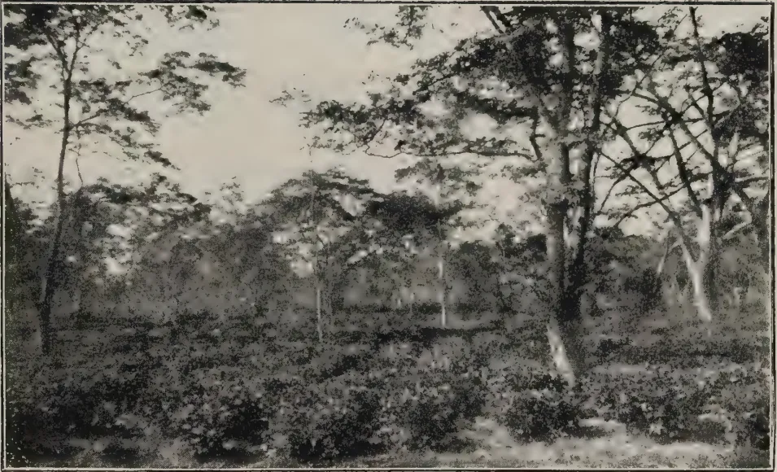
Fig 9. TEA CULTIVATION IN JORHAT
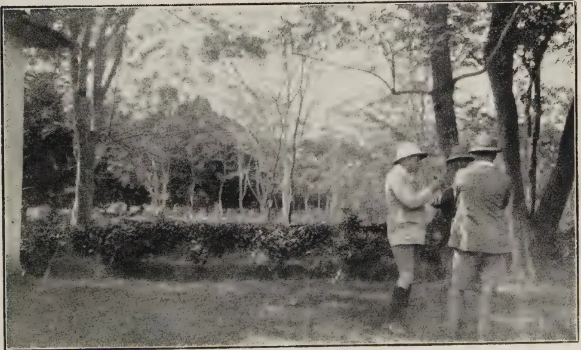
Fig 10. TEA CULTIVATION IN JORHAT
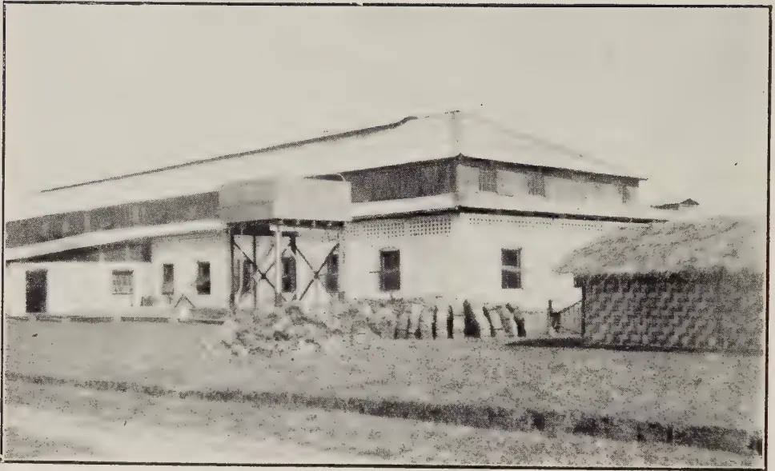
A black and white photograph of a tea factory in Jorhat. The building is a long, single-story structure with a flat roof and a prominent front porch supported by several pillars. The porch has a decorative railing. The building is situated on a grassy field, and a thatched-roof structure is visible to the right.Fig 11. A TEA FACTORY IN JORHAT.
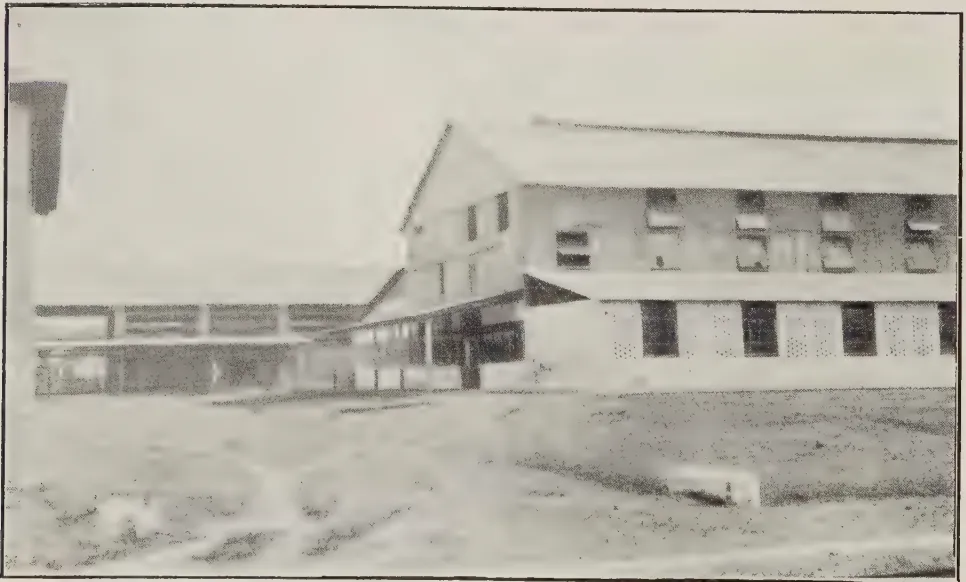
A black and white photograph of a tea factory in Jorhat. The building is a long, single-story structure with a flat roof and a prominent front porch supported by several pillars. The porch has a decorative railing. The building is situated on a grassy field, and a thatched-roof structure is visible to the right.Fig 12. A TEA FACTORY IN JORHAT.
FEBRUARY, 1926.]73(4) The land for this Station should be uniform in character and as flat as possible. It should be slightly below normal fertility. The Chief Scientific Officer stressed the necessity for uniform land and its being essential that it should be flat if possible.
(5) A model factory should be attached to this Central Station.
(6) This Central Station need not be in the centre of the tea growing area. It should be in a place which was easily accessible to tea planters and if possible near to a centre where they periodically meet. Tocklai was selected on account of its being in the centre of the Jorhat district and near the Jorhat Club, which has regular meetings during the year at which a large number of tea planters foregather.
(7) Small sub-stations should be opened in different districts later on and should be staffed by officers who have had experience in the central station and who will act as advisory officers and not as research officers.
(8) These sub-stations should not be started until the Central Station has accumulated sufficient information with which the sub-stations could begin their demonstrations and experiments in co-operation with estates under these advisory officers.
(9) The most essential work is research on soils and manures and work on manufacture. For soil and manure work a soil chemist is necessary and for the manufacturing problems a bio-chemist, and bacteriologist if possible with brewing experience is recommended.
These conclusions were arrived at only after the most careful discussion, and we would emphasize that we are convinced that the Ceylon tea industry requires its soil and agricultural problems investigated as early as possible. The factory problems also require attention but are not so pressing as the soil investigations.
In conclusion we desire to record our high appreciation of the hospitality and the manner with which Mr. Carpenter and his staff placed their time at our disposal at Tocklai. We were impressed with the work that is being carried out there and feel that as the experimental work in the field progresses further data of very considerable value to the tea industry of Northern India will be secured. The conditions of Ceylon tea differ so greatly from the conditions in Assam that a separate Research Institute is clearly warranted, but we do feel that the closest co-operation between the scientific workers at the existing Research Station at Tocklai and the Station about to be started in South India and of that proposed for Ceylon should be encouraged and fostered. We also recommend that arrangements should be made for a periodic exchange of results between these different stations and for occasional exchanges of visits between the scientific officers.
Separate reports on various aspects of the Assam Tea Industry are also submitted in the hope that they will be of interest and of use to the Tea Industry of this Colony.
F. A. STOCKDALE
M. L. WILKINS
J. HORSFALL
December 19th, 1925.
76[FEBRUARY, 1926.APPENDIX I.Provisional Programme for the Short Courses of Instruction, 1925.
SYLLABUS.| Time | Lecture Subject | Lecturer |
|---|---|---|
| Monday. | ||
| 9-15 a.m. to 10-15 a.m. |
The food of plants. Sources of supply. Air. Soil. General functions of the soil. Variation in fertility. Classes of soil and methods of their formation. Influence of sizes of particles noticed. Soil space. Soil matter. Soil micro-organisms, etc. | P. H. Carpenter |
| 10-30 a.m. to 11-30 a.m. |
Insects ... .. | E. A. Andrews |
| 11-45 a.m. to 12-45 p.m. |
Mycology ... .. | A. C. Tunstall |
| 2-30 p.m. to 4-0 p.m. |
Demonstrations { (a) Pruning (b) Plucking (c) Entomological (d) Mycological |
|
| Tuesday. | ||
| 9-15 a.m. to 10-15 a.m. |
Properties of sand, silt, clay and organic matter. Mechanical analysis—methods demonstrated. Classification of soils according to mechanical analyses. | C. R. Harler |
| 10-30 a.m. to 11-30 a.m. |
Pruning and Plucking ... .. | P. H. Carpenter |
| 11-45 a.m. to 12-45 p.m. |
Mycology ... .. | A. C. Tunstall |
| 2-30 p.m. to 4-0 p.m. |
Demonstrations { (b) Pruning (c) Plucking (d) Entomology (a) Mycology |
|
| Wednesday. | ||
| 9-15 a.m. to 10-15 a.m. |
Soil water and Drainage ... .. | H. R. Cooper |
| 10-30 a.m. to 11-30 a.m. |
The relationship between Insects and Plants ... .. | E. A. Andrews |
| 11-45 a.m. to 12-45 p.m. |
Manufacture ... .. | P. H. Carpenter |
| 2-30 p.m. to 4-0 p.m. |
Demonstrations { (c) Pruning (d) Plucking (a) Entomology (b) Mycology |
|
FEBRUARY, 1926.]
77
| Time | Lecture Subject | Lecturer |
|---|---|---|
| Thursday. | ||
| 9-15 a.m. to 10-15 a.m. |
Chemical analysis of soil. Methods and meaning of results |
C. R. Harler |
| 10-30 a.m. to 11-30 a.m. |
Tea manufacture | ... C. J. Harrison |
| 11-45 a.m. to 12-45 p.m. |
Manuring | .. H. R. Cooper |
| 2-30 p.m. to 4-0 p.m. |
Demonstrations | (d) Pruning (a) Plucking (b) Entomology (c) Mycology |
| Friday. | ||
| 9-15 a.m. to 10-15 a.m. |
Cultivation—Objects. Dangers. Varia- tion to suit different soils. Soil pans. Trenching Discussion of the soils |
H. R. Cooper |
| 10-30 a.m. to 11-30 a.m. |
Manufacture ... .. | P. H. Carpenter |
| 11-45 a.m. to 12-45 p.m. |
Insect Control ... .. | E. A. Andrews |
| 2-30 p.m. | Borrbhetta ... .. | .. |
| Saturday. | ||
| 9-15 a.m. to 10-15 a.m. |
Mycology ... .. | A. C. Tunstall |
| 10-30 a.m. to 11-30 a.m. |
Manuring ... .. | H. R. Cooper |
| 11-45 a.m. to 12-45 p.m. |
Meteorology ... .. | C. R. Harler |
Before giving an account of my visit I am most anxious to explain clearly that this report is in no way to be considered a report on the Tea Industry of Assam or even of the whole of the Brahmaputra Valley. It would have been an impertinence on my part to attempt such a thing after such a short time in the tea area. It is a summary of the information given me freely and willingly by all those with whom I came in contact and without whose cordial co-operation there would have been no chance of seeing or hearing so much of value and interest. I owe them, one and all, a debt of gratitude which I hope I may have the chance of repaying in Ceylon. Added to this information are the impressions I was able to gather from what I saw and the outcome of much cross-questioning and argument.
The province of Assam as far as Tea is concerned consists of the Brahmaputra Valley (where I visited) and the Surma Valley (Cachar and Sylhet). There are some 412,500 acres of tea out of a total area of rather over million acres owned by the tea producing companies. Assam as we know it in the tea sale lists is the Brahmaputra Valley and has about 267,000 acres in tea. The province as a whole produces (1924) 236 millions of tea. The land already owned by the Companies and available for opening is probably another 100,000 acres. Further land available would seem to be almost unlimited. Added to the advantages of available land, it is comparatively rich alluvial soil, and the existing crops have been produced with a minimum of artificial manure—Rs. 15 to 20 per acre. The Tea zone in the Brahmaputra Valley from Amingaon Pandu Ferry to Saikhoa Ghat is a matter of 250 to 300 miles as the crow flies. The mail trains which cover a good deal bigger mileage take 22 to 24 hours and there is no alternative except a river steamer. The bulk of the Tea area is south of the Brahmaputra which runs East and West here. The southern boundary is the hills about Shillong on the South-west and the Patkoi hills on the South and South-east (over the Shillong range at the South-west corner of it is Cherraponji and from it looking South is the Surma Valley). The valley varies largely in width but is not less than 40—50 miles wide at the Frontier. It will therefore be seen that Tea is merely scattered patched but the further East one goes the greater the development. The lie of the land must be seen to be believed. Doom Dooma District is a matter of 1,000 miles or more up the river and is 340 feet above sea level. Tocklai is only 100 feet above sea level. The whole valley rises perhaps a foot per mile. The soil is alluvial deposit without a stone or a pebble anywhere. The soil problem appears to be merely one of the water table. It has been found that 3 or 4 feet of soil above the soil water table are necessary. Low-lying land is swamp and put under paddy, high land (the difference between the two being possibly only about 3 feet) is put under tea. At the time of our visit the weather was fine and the water table low. In the height of the rainy season with the water table at high level, the conditions must be remarkable. The variation is well demonstrated by one garden of exceptional position. It has 15 feet of loam above the water table: High grown tea!
Rainfall is in the South-west months 80 inches at Tocklai to 120 inches more or less further up: i.e. reasonable in the Brahmaputra Valley; but with one marked contrast to ours. There is plenty of sunshine at the same time. It is their forcing period and July/August are their heaviest cropping months.
Temperatures are high as also are humidities during these months; but their good teas are made before and after their rush, i.e., their second and third flush just about the beginning of the Monsoon and the autumnal teas at the end of the season in the cold weather—late October and late November if the season is a long one.
FEBRUARY, 1926.]79Finally before entering into details of work, I would draw attention to the fact that Assam is not in the Tropics; it is 26—27 degrees North, nearly 28 at the frontier. It therefore has a definite summer and winter; whereas there is only small "variation" through the year in our mean temperatures. In Assam the July mean temperature is 83° and January 60°, i.e., almost Ratnapura mean in July and Nuwara Eliya mean in January.
This factor controls the accepted methods of work, though personally I could not satisfy myself that the cold and the dry weather in their winter was sufficient cause.
Their system therefore is to get their crop from May to November, i.e., in 6 months and their methods of plucking, pruning and cultivation are designed to that end.
I propose now to go into some details over field and factory methods and finally point out what in my opinion we have to learn from Assam methods; and further indicate possible lines of investigation for the Tea Research Board.
Pruning.—I propose taking this first as the varying methods of tipping can then be better understood.
There are, speaking generally, three ways. Firstly, a collar prune as we know it, but not of selected bushes, whole fields go down. It is reckoned now that once in 15—16 years is enough: the period was less, the tendency is for it to become longer. Superintendents are aiming at not doing more than 6% of their area in any year. This type of work is usually done very early or very late in the cold weather. On recovery the first tipping is done at 24 or more inches. If the recovery is strong and even, this is pruned again next year and a good length of young wood left, 6—9 inches. Should the recovery be poor or uneven the area may be left two years; but I gather this is infrequent and will probably become unnecessary as the value of preparing the bush beforehand with artificial manures becomes more generally recognised. Having pruned and left the good length of young wood, the general principle is to prune up two inches every year. In due course the pruning table becomes 27 or 30 inches high, inclined to be spindly and thin and not to throw out good young wood. It is eventually cut back to just below the top of the original 9 inch length. This cut-back and the collar pruning are done by men. The light pruning (two inches up) I saw being done by women: the wood generally being barely pencil thickness. One very pronounced feature is the cut itself at every stage. It is never flat and generally at 45 degrees or even steeper and the callousing even of the severest collar-pruned bush is amazing. On the lighter work the cut is completely healed. Any marked die-back in pruned branches is a rarity. A collar-pruned bush is washed with caustic soda for two consecutive years: other dressings as favoured sometimes: the object, of course, being the same as in Ceylon. There is practically no pruning of a bush on its merits as we know it. The unit is a field or section: it goes up or it goes down. The cost is much as in Ceylon. I found Rs. 15/- per acre allowed all over (the light work by women costing Rs. 12/50) and the tea is planted wider than we are accustomed to. New land or replanting is going out 5 or even 6 feet apart.
It was rather remarkable for us to find Tocklai inclined to consider the ordinary "Pruning up" too severe; where there were two or three new shoots of the same thickness more or less on the same branch, Tocklai does not advocate selection of one to remain. "If the bush can feed 2 or 3 good young shoots on that branch, well and good: leave them there." Heavy pruning when necessary is not objected to but it is advised that the area should receive special cultivation before and after pruning.
80[FEBRUARY, 1926.Plucking.—Cut down tea is first tipped at about 24 inches : so also is the second type of cut down. The tea pruned up is generally tipped to a level 6 inches up or in some cases 3 to 4 leaves up, i.e., lighter than we do. From this point on, the systems vary a good deal, but they are all very severe. We must, however, bear in mind that this tea will be pruned again towards the end of the same year. The second flush may be taken leaving two full leaves, the next one, one full leaf and then it is simply stripping to the fish leaf all the time. This is lighter than usual. One round after first tipping to one leaf and then stripping is largely in vogue. The flat table plucking is rigidly adhered to in Upper Assam and towards the end of the season the plucking surface is a mass of crowsfeet. The output per acre is achieved in the short season in this way.
The leaf taken is 'two and a bud,' but there are four kinds and I heard an apt classification covering not only Assam but Northern India.
This was probably applicable some little while ago. It was not applicable to leaf I saw which was all fair average, neither fine nor coarse.
Cultivation.—Green manures hold a very important position in Assam, far more so than generally in Ceylon and this is all the more remarkable when one realises that the average humus content of Assam soils is far higher than here. The fundamental principle that humus is the foundation of agriculture has never been lost sight of and it is remarkable to find old tea lands still maintaining their humus content. Artificial manures remain secondary and supplementary. That increased yields could be and in some cases are being obtained by the judicious use of artificials under such conditions goes without saying. Of the usual Ceylon green crops I saw only Boga medeloa in quantity and a few Albizzia moluccana. In permanent high shade Albizzia stipulata is largely used. It is being replaced in some parts owing to branch canker by Albizzia moluccana, Koroi (Albizzia odoratissima ?) and Derris robusta. The quick growing green crops are Sunn hemp (Crotalaria juncea), Cow pea (Vigna catjang), Boga medeloa, Dhall, Daincha (Sesbania aculeata), Indigofera arrecta. With a small application of lime, oil cake or rock phosphates, a crop of 12 tons per acre is looked for in the season. These crops are torn up and then hoed in or trenched.
Added to this is the enormous crop of weeds which is hoed in as often in the year as labour conditions allow. One sees every known Ceylon weed and grass (except Alavangu Pillu !) and the growth is amazing. Ageratum 4 and 5 ft. high in solid masses. All this goes back into the soil.
The deep hoeing corresponds to our deep forking and the light hoeing only a few inches deep takes the place of our weeding. Clean weeding as we know it is not done.
The use of artificial manure is gradually coming in. I gather that, speaking generally, the older generation are sceptical and unconvinced as yet; the younger ones are using it in a small way to begin with. I append
FEBRUARY, 1926.]81various specimen mixtures* and it will be noticed that solubles form the bulk if not the whole of them. This is easily explained as the object is a quick result over a short period of plucking. It is very obvious therefore that the general state of tilth is excellent as the land is dead flat and very easily worked.
The impression Ceylon methods made on one of the chemists of the Indian Tea Research Board are worth quoting.
"Manuring of tea is a much older practice in Ceylon than in Assam. The reason for this is probably that tea was put out on old coffee land which was partially exhausted. There have been few carefully carried out manuring experiments and most manure mixtures are devised by Visiting Agents who work chiefly on their own experience. The result is a tendency to manure in groups of estates rather than on types of soil."
After quoting specimen mixtures, etc., he continues :
"Although many of the mixtures are uneconomical and some are unscientific, yet they mostly combine slow and quick acting manures that give good results. These mixtures offer a distinct contrast to the two or three components used in Assam."
Liming experiments have been fully dealt with in the Tropical Agriculturist.
Diseases.—Unfortunately there was no mosquito or blister blight to be seen in Assam at the time of my visit. Otherwise diseases are much as in Ceylon, with the exception of Shot-hole Borer (which does not exist), Tortrix is common (see Harler's report) but not serious : it is however a different species.
Spraying is far commoner than in Ceylon and the annual pruning gives a wonderful opportunity for preventive measures. Small children are given a few pies to go round pruned fields and bring in anything they can find on the frames.
Planting.—Supplying and replanting. This is only a matter of labour. The land is there and the growth we saw at Borbhetta on what was considered poor soil, is amazing. At 6—7 years old planted 5 × 5, the ground is completely covered. I saw no planting of new land to speak of, but a good deal of systematic replanting of poor jat old areas with good jat. The cost of uprooting was given me as Rs. 45/- per acre! an incredible figure to us ; but it gives a good idea of the free loose soil with no stones, a rather shallow root system and of course wide planting. The preparation of the land for the new plants gives much food for thought, more especially when the richness of the soil is kept in mind. It is put for one or possibly two years entirely under green crops. The plants are then put out with a further green crop with possibly an application of lime or some manure to assist the green crop. I can hardly conceive a finer example of "looking after the soil and the plant will take care of itself." These new plants on old soil are fit for first pruning in two years (occasionally three).
Many experiments are in hand as to the best way of pruning for the young tea and some results are appearing and I would draw attention to these in Mr. Andrews' latest paper on the subject.
* Not reproduced.—Ed. T.A.
82[FEBRUARY, 1926.Manufacture—as practised in Assam, is so radically different from Ceylon methods that I propose giving as full and detailed a description of it as I can from the observations I was able to make in about a dozen factories situated in Jorhat and Doom Dooma District.
Firstly, consider the problem to be tackled. The crop has to be handled in 6 months and one finds half of it may be harvested in two months. This is serious enough on fine estates in Assam, harvesting 1,000 lb. an acre in a season. What it must be in Cachar where half as much again is harvested on certain gardens, give food for thought. Harler quotes one section yielding 2,400 lb. per acre.
As against this, there is one great natural advantage. The land is flat and therefore sites are easy and floor space is unlimited compared to Ceylon.
Speaking generally, the equipment for handling the annual crop is much the same as ours; i.e., a roller to 75,000 lb. more or less: but to our way of thinking it is less than half what we should consider necessary for the maximum monthly crop.
The factories almost all consist of a number of single storied buildings. One for actual manufacture except for fermenting which is usually a separate building close by: and then a number of open withering sheds. One occasionally saw narrow sloping tats as in Ceylon but there was wire mesh, not hessian. The usual method, however, was broad "chungs" made of bamboo tats and covered with hessian sometimes. These were 15 to 20 feet broad and feet apart vertically to enable boys to scramble about and collect the leaf. There was usually a good overhang on the roof to keep off direct sun or lean-to corrugated iron at the ends.
Power was by horizontal steam engine or oil engine and a lot of money is being spent replacing old plant. It should be remembered that oil is close by at Digboa and coal at Margherita. Electric power with individual drive is being installed in the most up-to-date places.
Rollers are the large rapid with flat brass tables. "Battens" didn't seem to be known. No importance is attached to the temperature of the rolling room.
Roll-breakers are primitive and apparently not considered of much importance although here and there one saw a Colombo machine without a hopper.
Fermenting houses are separate and every effort is made to keep them cool and dark. They have staggered loop holes in the walls and usually jute hessian or some equivalent outside or inside right up against the main walls. This would appear to prevent the free current of air. The fermenting is done on the floor usually on cement but occasionally glass laid in cement. The leaf is laid thicker than in Ceylon: sometimes as deep as 5 inches. The loop holes do not go down to the level of the fermenting tables but stop well above it.
Firing is usually by Endless Chain Pressure or Empire and final firing by up-draft sirocco. Such large capacity machines are not often seen in Ceylon.
Sifting is largely done by the squirrel-cage machines, although the "Magic" sifter is being installed in some gardens. The squirrel cage is "home
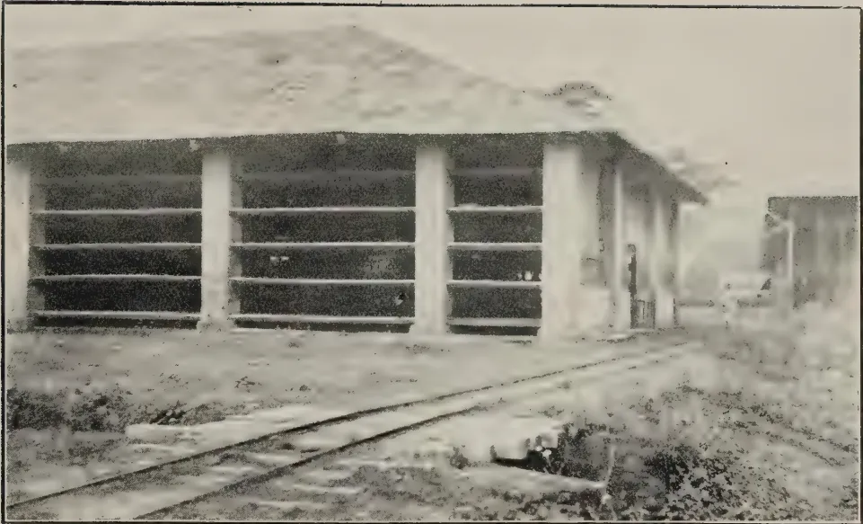
A black and white photograph of a withering house, a long, low building with a gabled roof and several large, dark, horizontal slats or 'chungs' visible along its side. The building is situated on a dirt path or track, with some vegetation in the foreground and background.Fig 13. WITHERING HOUSE SHOWING CHUNGS
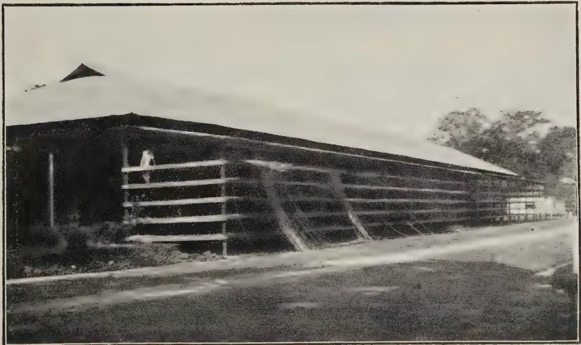
A black and white photograph of a withering house, similar to the one in Fig 13, but with the 'chungs' (horizontal slats) appearing to be under repair or damaged. The building is situated on a dirt path or track, with some vegetation in the foreground and background.Fig 14. WITHERING HOUSE WITH CHUNGS UNDER REPAIR
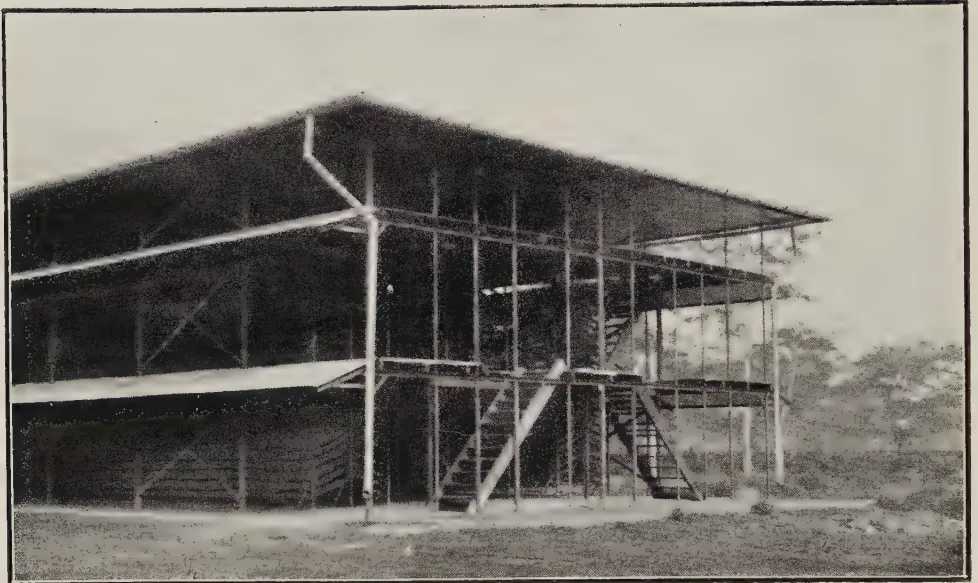
Fig 15. WITHERING HOUSE—JORHAT
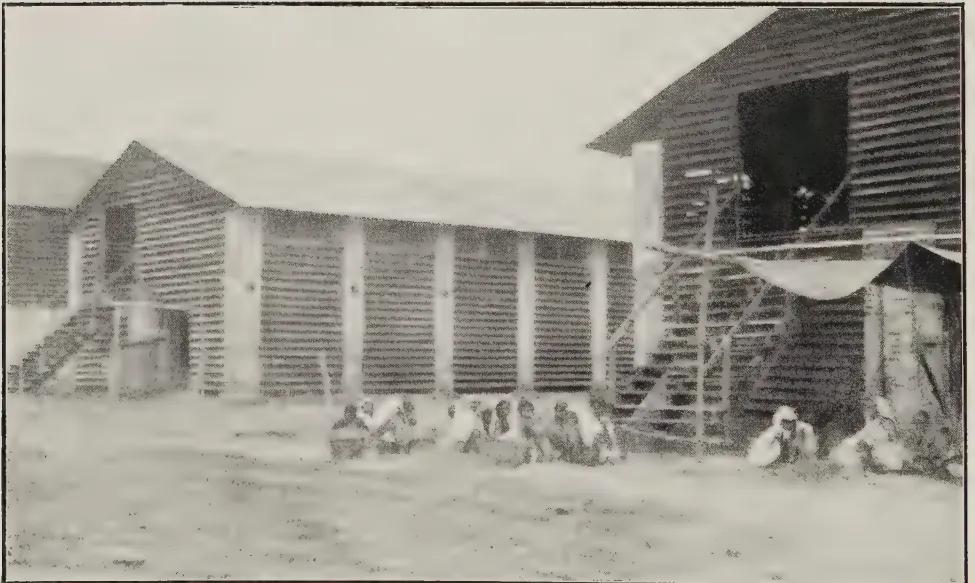
Fig 16. WITHERING HOUSE—DOOARS
FEBRUARY, 1926.]83made" and if run at the right speed seems effective, though I fancy the greyness of the made teas may be to some extent put down to these machines and the combined (Savage) Cutter and Bateman's stalk extractor.
I saw some remarkably cheap and effective tea bins made of ordinary corrugated iron sheets, suitably framed in timber. They had from 600 to 800 c. ft. capacity.
Chests that I saw were all venestas.
These are different to ours. Leaf is weighed at noon and 4 p.m. only. One saw fermented leaf on the tats presumably from overheating in the baskets or during the long transport from the field. The spreading is much thicker than in Ceylon—9 ft. to the pound. Leaf is taken very underwithered according to our ideas : 65 % is well withered and circumstances occasionally force them to take it as high as 69-70 %.
This leaf goes to a roller running at 80 revolutions a minute : the extremes I came across were 65 and 90. It generally gets two rolls totalling an hour or less with the shorter roll with light or no pressure first : but there are many variations even to full pressure on the first roll. No special attention is paid to the temperature of the rolling room and it will be realised that short rolling at those speeds is the only way to avoid destroying the leaf by overheating. "Heating" is an elastic term and our upcountry estates where fine teas are turned out even with rolling rooms going up to 80° are far stricter in their interpretation of it. The rush months are hot and damp and the work has to be "got through somehow." This brings one back to shortage of rollers for handling crop in busy months. The leaf goes now to the fermenting house which compared to the rolling room is cold and dark. This would appear to check the rate of ferment and the leaf is spread 3 to 5 inches in a perfectly still atmosphere or as still as possible. The period of ferment varies with temperature as in Ceylon. July 86 degrees and November 64 degrees. It is at this stage that an interesting variation of our methods take place. "It is common to give a final 10 minutes' roll before firing for the sake of appearance" (Harler).
Firing now takes place and the first firing is rapidly put through in the big machines at temperatures 20 degrees or so higher than Ceylon but so rapidly that the leaf is only 3/4 fired : It then gets a second firing at once in another machine. It gets a third firing before bulking and this is again at much higher temperatures than we use for the purpose.
Sifting is done on a series of squirrel-cage machines and I saw a certain amount of hand-winnowing of the fine grades.
The bulk teas produced by these methods are interesting. A very small percentage of B.O.P. of extraordinary appearance, a perfect blaze of tip at the best times and realising 5/- and up to 9/- a lb. also a very small percentage of B.O.P.F. fetching much the same as good Ceylon B.O.P.F. but the other grades are nowhere in comparison. They appear to me grey and dull and full of open flaky leaf as one would expect from such fast rolling of under-withered leaf. There is also a lot of fibrous mid rib. The leaf has been torn off it. Autumnal teas show the same reddish appearance that one sees here in cold weather.
84[FEBRUARY, 1926.In the cup the liquors are a brownish red, hardly as golden as our teas realising a similar average. There is no bite or body in them whatever. This criticism naturally applies to the teas I tasted at the end of the season when there was just a hint of flavour. The finest second and third flush teas were several months old and flat. Tea will naturally not keep in the hot damp Monsoon weather. The infused leaf also was dull and much browner, not the bright coppery colour we aim at here. This might be due to several things in our eyes : over-heating in rollers or over-fermenting : but does the extra 10 minutes' rolling after fermenting "for the sake of appearance" point to a possible explanation ?
Everything seems to be sacrificed for the sake of the wonderful appearance of the B.O.P. fetching double and even treble what we get here. The result in average prices for a break is much the same as ours : the average for the year is barely as high as our best though there is little to choose and as far as profit per acre is concerned, their range is remarkably like ours in Ceylon. A trial of each other's factory methods would be of absorbing interest but it is hardly a commercial proposition in spite of similar profits per acre as the teas produced are so different that the result would probably be merely to upset one's buyers.
It has been driven into me with tremendous force that had Assam our labour or had we their soils and available lands we could either of us swamp the market. It follows that should mere quantity be needed by the market, we shall be a poor second as they have their soils and they will "get it off somehow." But fine teas will always be required. Now there are only 46,000 acres of Tea in Darjeeling and by no means all of these can produce fine teas as they vary from sea level to 7,000 feet (Harler). A long view for such of us as are so fortunately situated as to be able to produce good teas seems to indicate quality production. To follow this line further in the interests of the industry as the whole as against that of the stand-out "Mark," it does not seem right that adjoining estates should produce, the one fine teas and the other ordinary teas. The ordinary teas could apparently be improved. The reasons underlying this difference are matters for consideration, the collection of existing data and its co-ordination which may be reasonably expected to indicate some profitable line of research. Elevation is no doubt a large factor but the possibilities of improved teas throughout the Island are demonstrated everywhere by the actual existence of outstanding teas in each district. Why are they outstanding ?
In Assam signs are not wanting that they are not going to 'sit down' under the conditions that have obtained over the last few months of Ceylon average, being 4 pence above Northern India. A factory in the experimental station at Borbhetta or Tocklai will be in existence ere long and it will afford the opportunity of testing other methods. The bacteriologist with biochemical training has arrived and his work is to study quality in tea ; and in this connection what struck me most forcibly at Tocklai was,
FEBRUARY, 1926.]85that there are 8 Chemists; 4 Europeans, 4 Indians; but there is one Mycologist and his assistant, one Entomologist and his assistant and behind them there is no Government Agricultural Department with its staff of scientists. This constitution of the scientific staff gives one to think.
In conclusion I would sum up my impressions by saying that Assam has a remarkable grasp of essential principles of soil conservation, but they rather lack study of detail in field works. We are rather obsessed with detail and inclined to lose sight of the essential principles. I quote as nearly verbatim as possible a short conversation I had with the manager of a large company. We had been discussing cultivation and he had been impressed with the steepness of our tea land.
He said..... " But then you can't cultivate on those steep lands "
Reply..... " Yes : we do : even to the extent of putting manure into alavangu holes if a fork cannot be got in "
He said..... " Then of course the whole of the land is terraced "
Reply..... " No : there is very little terracing in Ceylon "
He said..... " Then you have lost all your top soil ? "
Reply..... " Long ago "
This struck me very forcibly from a man who had spent his life on a flat estate. His first thought was the soil.
" Take care of your soil and the bush will take care of itself "
I see important lines of research indicated on these lines : not only in soil conservation but in recreating top soils.
In factory practice I consider we have got ahead of them, especially in the last few years, since the slump. It is " Vullamy " or as they call it " Dystoor " that controls their factory methods nowadays, but as the result in profit per acre is on a par with ours, any alteration has to be demonstrably an improvement before it is likely to be adopted. The factory on the experimental station may demonstrate the possibilities on these lines.
Finally, I wish to record my appreciation to the P. A. of Ceylon for selecting me to undertake this visit on their behalf and I trust the information I have been able to gather in all too short a visit may prove to be of value to the Industry.
Further, I owe a special debt of gratitude to certain firms in London and Calcutta, also to the staff at Tocklai and especially to the chief scientific officer Mr. Carpenter and lastly to the Superintendents of the various companies whose gardens I visited. Nothing was too much trouble for them. Their kindness and co-operation, let alone their hospitality, will not easily be forgotten. I trust we shall have an opportunity of showing our appreciation, should any of them consider a visit to Ceylon worth their while.
JOHN HORSFALL.
9.12.25.
86[FEBRUARY, 1926.Messrs. Stockdale and Horsfall have dealt with Tocklai and Upper Assam respectively, so I will try and describe my general impressions as well as my experience in Dooars and Darjeeling.
It must not be forgotten that I was only able to see an infinitesimal proportion of this vast country in the short time at my disposal, but I endeavoured to visit what were described as fairly representative Estates.
One is first impressed with the enormous distances which have to be traversed to get anywhere. We had to spend an evening, that night, the whole of next day and night in the train arriving at Tocklai on the morning of the fourth day and I had nearly the same experience going to Dooars. The scenery is dull and very uninteresting, mostly enormous paddy fields, until the Darjeeling district is reached. Here we had a wonderful change, an extraordinary piece of engineering, picturesque people, and one's first view of Kunchinjunga, 28,000 ft., the third highest mountain in the world, is an experience which is not easy to forget.
A study of the problems of Tea Research as conducted at Tocklai reveals the magnitude of the task before us and the immense labour required to get at the secrets of nature in the scientific sense of the word. Flat land, an even cover, and uniform yield are essential before the work can begin.
The younger generation of Indian planters are fortunate in having the opportunity of attending a course of lectures which must form a very useful groundwork or basis for thought and investigation. The richness of the soil in comparison with average Tea districts in Ceylon is apparent to the most casual observer. We were shown plots which were said to be lacking in certain main elements, but the fact remained that the soil was growing huge bushes, while the vigorous growth of certain well-known Ceylon weeds was very pronounced.
A plot which was systematically plucked to below the fish leaf and which had given as good a yield as others, indicates that the tea bush is a hardy shrub, and possibly the virtues of some of our plucking systems are not in reality quite as great as we think them to be.
Another China jât plot had by special treatment improved in jât in a very remarkable manner.
The average planter's life and living conditions in Northern India is very different from what obtains in Ceylon to-day and most of us would be pretty miserable if we were transferred to that country. The climate is much more trying and less healthy. Most men take quinine every day. Malaria is common and the worst types, such as "Blackwater" fever, "Tertian Malignant," are not unknown, and there have been cases of the dreaded, and nearly always fatal, "Cerebral" fever.
Some Estates are very isolated and all are situated at immense distances from their base—Calcutta. The expense of a trip to that city and the time and trouble involved is so great that the expedition cannot be lightly
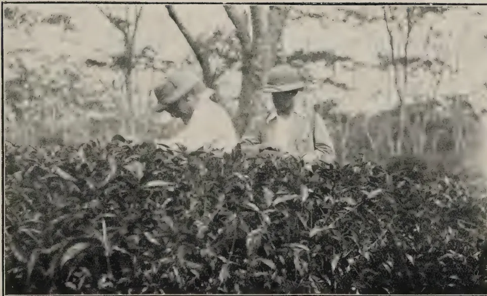
A black and white photograph showing two individuals, likely tea pluckers, working in a dense field of tea bushes. They are wearing light-colored shirts and hats. The bushes are in the foreground, and trees are visible in the background.Fig 17. TEA IN JORHAT
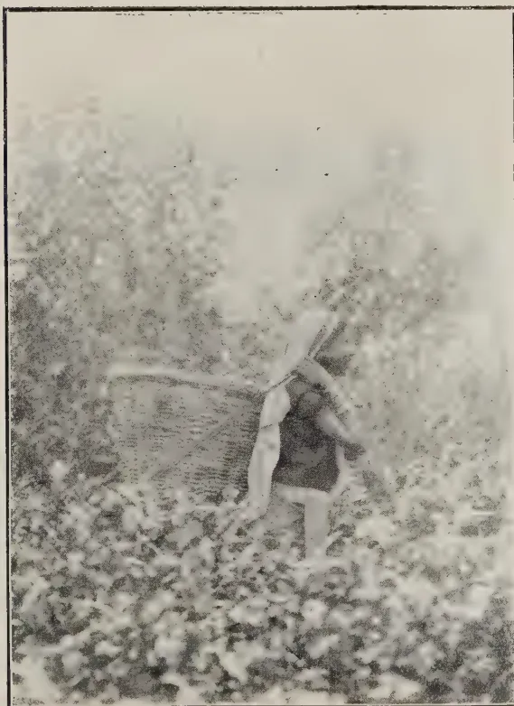
A black and white photograph of a single tea plucker in a tea field. The person is wearing a dark shirt and light-colored trousers, and is carrying a large woven basket on their back. They are surrounded by dense tea bushes.Fig 18. TEA PLUCKER
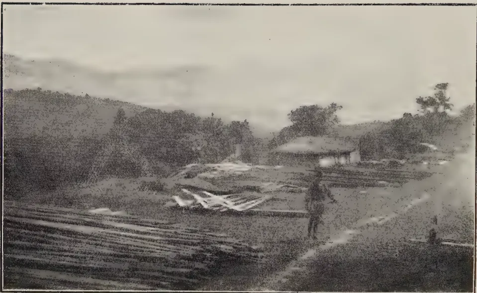
Fig 19. VIEW OF THE HILL COUNTRY—ASSAM
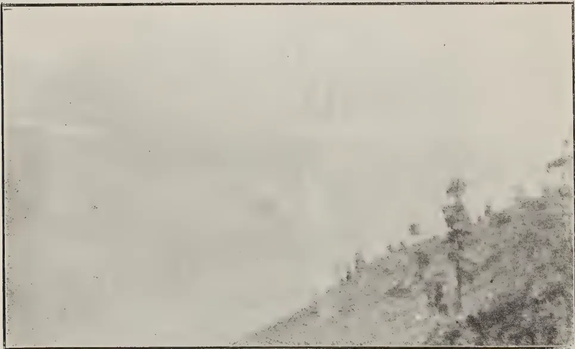
Fig 20. TEA IN DARJEEING SHOWING CONTOUR PLANTING
FEBRUARY, 1926.]87undertaken, Communications are very bad. An indifferent train service, appalling roads and no telephones. There are practically no local shopping facilities and most supplies have to come from Calcutta—if by river 6 weeks delay is involved—so needless to say cold storage food is unknown. Bungalows are mainly upstairs buildings and none I saw compare with our more modern buildings. Social amenities are provided for in the way of Clubs—Polo and Tennis appear to be very popular—but some members must have great difficulty in attending, especially during the rains when the roads are little better than ploughed fields.
The life should appeal more to bachelor sportsmen keen on riding and shooting than to married men whose wives must have far less agreeable existence, than the planting ladies of Ceylon, but so adaptable is human nature, I heard no grumbling—perhaps because they have got accustomed to their environment and do not realise that relatively we live in the lap of luxury in Ceylon. So far as I was able to ascertain the standard of pay is not vastly greater than Ceylon, but I heard of some very handsome commissions earned in recent years.
The Tea I saw in the Dooars had a magnificent even cover and of excellent jât but did not possess the same mathematically level well clipped hedge-like surface which was so noticeable in Assam. More full leaf plucking is done. I did not see any of the high cone-like bushes frequently observed in Ceylon. Tocklai authorities are of the opinion that a level bush gives the best results.
Lining was mathematically perfect. The soil contained some grit and pebbles generally 6 inches below the surface. The rainfall in this district is as high as 180 inches. It is strange that the rainy and the hot weather comes together. Droughts, when experienced, occur in the cold weather.
The main roads, or what I saw of them, were extremely poor but not quite so execrable as they are in Assam where the full load of a cart at certain seasons is only one chest of tea.
A very nice, well regulated or even spaced, permanent shade was noticeable over a considerable area—Albizia stipulaia, Derris robusta Dalbergia being common. Dadap is not favoured and is accused of promoting certain diseases, but the few trees left seemed to be of a different species to the Ceylon variety. No coppiced legumens were observed. Boga, Cow Peas, and other crops are grown and dug into the soil instead.
The much debated question as to whether the loss by transpiration of soil moisture via foliage of standing shade is greater than coppiced or uprooted legumens appears to have been decided by Tocklai in favour of the former.
The growth of weeds on some Estates was positively terrifying from a Ceylon man's point of view. Planters assert that when a field gets too "jungly," the bushes stop flushing and the coolies dislike plucking them. Leech trouble, however, seemed to be very much less than would be the
88[FEBRUARY, 1926.case with a similar growth in Ceylon. It would appear that the cost of controlling this growth is greater than the average cost of clean weeding in Ceylon and it is highly improbable that any Ceylon Estate in this condition would retain its labour for long.
Supplying of old tea, or in-filling as it is called here, is a great success and a common routine work.
Mosquito Blight (Helopeltis) was the worst pest observed and its effects were just the same as were experienced in the Kelani Valley 30 years ago. Its ravages must have reduced the output by many million pounds. Several leaf blights were also observed.
Manuring as done in Ceylon is practically unknown. Of course the soil is so much richer that heavy dressings are unnecessary. Some Agency Firms consider Rs. 20/- per acre ample to spend on this work. Long transport must also be considered. The mixtures applied are not well balanced and quite unlike our own.
The main object of drainage is to reduce the water table. Near the foot hills some terracing, very similar to Kadugannawa paddy fields, was done.
Pruning is mainly high and light, bushes 28 in. to 30 in. high and wood averaging no thicker than a slate pencil. The little collar pruning done was severe and not very successful as it was admitted that deaths were as high as 25%. Every bush is pruned to the same height.
With regard to manufacture the main problem must be in connection with handling of huge crops during a very limited period. The equipment looks immense, but, when the incidence of the intake is examined, it is clear that they have none too much machinery, and indeed it would be quite inadequate if Ceylon methods were adopted.
Factory design in no way complies with our ideals and there are generally no facilities for controlling wither. Rollers are driven at a terrific speed, Jackson's Rapids were the only type I saw, plain brass table being generally employed, and two rolls of 20 to 30 minutes appear to be the custom of the country.
With one exception the withers were 15 to 20% greener than ours. Outside withering lofts are much, if not chiefly, used—without fans, or heat in any form—wire tats or "chungs" (Bamboo platforms) are standard.
All the leaf examined was fair medium—not coarse—but some of it had a much more fibrey stalk than one would expect when looking at the leaf. Great stress is laid on Mann's ideas of a "chemical wither" and the inadvisability of keeping leaf longer on the tats, but in many cases its removal is due to the fact that the space was urgently required for the next weighing of leaf.
Roll-breaking is a very crude operation from our point of view and I did not see a single modern type of Roll Breaker. Locally made circular hand-driven machines were used, or a small short obsolete type, and I heard of factories where even such machines did not exist.
FEBRUARY, 1926.]89Fermentation is looked upon as one of the most important processes. It is done on the floor of large dark buildings, spread in various thickness, in regard to which opinions differed.
Firing, or half firing, was invariably done at high temperatures up to 240° and huge machines were quite common—the big Paragon generally being the smallest Drier employed.
With the exception of one factory which had a Jackson's Magic Sifter, all others had locally made Rotary Sifters. The grading was much the same as was common in Ceylon 20 years ago with a small percentage of a very tippy B.O.P. and a high percentage of lower grades, except that what we used to call Pekoe Souchong is now cut and called B.P.S.
Most teas examined and tasted had a nice appearance and bright infusions but lacked in the cup the chief characteristics found in high and medium Ceylon growths.
I am informed that some of their best teas are made from "second flushes" which is quite contrary to our ideas.
This district is quite different from the chief tea producing area and everything is on a much smaller scale. The average sized garden is very small comparatively and they are scattered about over a large tract of steep and precipitous country and are mainly most inaccessible. Some are only approachable by a steep and badly traced riding road with perhaps a walk at the end of it.
The tea I saw was of China jât and the cover was distinctly poor.
The soil is said to be deficient in Nitrogen but rich in Potash and Phos. Acid. Mica seemed to be present everywhere. The Estates were situated on steep hill sides—quite as steep as in the region of the Haputale pass—and many were terraced exactly in the same way as the paddy fields previously referred to. The variation in elevation between the top and bottom of some Estates must be rather extraordinary and a long narrow strip is a common shape.
Although the district is stated to be of some 40,000 or 50,000 acres—I understand this includes the Terai and foot hills—it is doubtful if the portion which produces the flavoury teas, for which this district is celebrated is more than a third or quarter of that area. As the average yield appears to be about 300 lb. per acre, the total output cannot have much influence on the world's production.
In conclusion I wish to very heartily endorse all that my colleagues have to say with regard to the kindness and hospitality which we received. Our brother planters in this vast continent are a fine body of men living under far less pleasant conditions than ourselves, mainly in an unhealthy climate, often working under great difficulties. Some of them are pioneers whose achievements in converting remote forests into prosperous Estates are something they can well be proud of and such men can be truly described as builders of the British Empire.
M. L. WILKINS.
96[FEBRUARY, 1926.CHARLES HERBERT WRIGHT, B.A.
Having dealt with the root and stem diseases of Hevea, the writer proposes to discuss the significance of the diseases of the leaves and fruits (capsules or pods). Judging from the general attitude adopted towards the question of leaf disease, one would infer that at present there were no serious diseases calling for attention. But in actual fact this is far from being the case.
It is much to be regretted that the deciduous nature of Hevea has led to a false impression in the minds of some that the disease factor is suppressed by the annual leaf fall. It is incorrect to assume that because the diseased leaves are shed the disease is itself thrown off.
On the contrary, as the individual trees do not winter simultaneously, some trees may be quite bare, while others have either produced new leaves or have yet to "winter." Thus, the disease cycle is continued infection of the recently produced foliage resulting from trees still in possession of the previous year's leaves. Again, certain leaf diseases may affect the twigs, etc., of the branches which bore them, the hyphae growing up again through the leaf stalks and causing a secondary leaf fall. The spores produced from the hyphae in the fallen leaves have also to be taken into consideration, thus constituting a third source of infection.
It should therefore be realised that Hevea can be crippled to the same extent by leaf disease as any other perennial, that a repetition of an epidemic comparable to that of Hemileia vastatrix, which resulted in the devastation of the coffee areas in Ceylon towards the close of last century, is highly probable if the question of control is not taken in hand.
In South America the leaf disease caused by Fusicladium macrosporum has already led to the abandonment of large areas of rubber because people have failed to realise the significance and potentialities of a serious leaf epidemic.
The exhaustive effect on the tree, occasioned by abnormal leaf falls must lead to its ultimate death.
A distinction must be made at the outset between the fungi causing leaf and fruit diseases of Hevea, which are known to occur in the Eastern and Western Tropics respectively.
The leaf diseases of Hevea are due to the incidence of the following fungi:—Catacauma Huberi, Fusicladium macrosporum, Scollotrichum Heveæ—Phytophthora Faberi and Meadii, Glaesporium alborubrum, Oidium sp.—Helminthosporium Heveæ, Phyllosticta Heveæ, Ascochyta Heveæ, Guignardia Heveæ (Sphaerella Heveæ), Sooty moulds, Aschersonia, Thread and Horse Hair blights, and the red alga Cephaleuros parasiticus.
FEBRUARY, 1926.]91With the exception of the first three, recorded from South America, the above have been known to occur in the tropical zones of the East.
Abnormal leaf fall is occasioned by Phytophthora, Gloeosporium and Oidium, the first two also being responsible for pod rot. The spotting and blotching of the leaves is caused by Helminthosporium (Bird's Eye spot) and Phyllostice; it should be mentioned that many other fungi are known to occur in the spotted areas of dead tissue, but the majority are in the main saprophytic following in the wake of the parasitic organism—a common phenomenon in plant pathology.
The rim blights include Ascochyta Heveæ, Guignardia Heveæ, Sphaerella Heveæ, their presence being heralded by the dying back of the leaf margins producing a rimming effect. It is often easy to confuse the black patches produced on the leaves by Sooty moulds (Meliola, Chaetopeltopsis, etc.), with an attack of Phytophthora, but the former are superficial, living on the secretions of scale insects and the "extra-floral" nectaries of the leaves; like Oidium they are superficial, but unlike Oidium, which produces Laustoria, penetrating the epidermal cells, they are comparatively innocuous. Aschersonia is another fungus, apart from the Sooty moulds, which parasitizes scale insects.
The thread blights include both epiphytic and parasitic forms, while Marasmius equicrinis (horse-hair blight) spreads over the leaves in an epiphytic manner. Red rust, occasioned by Cephaluros, is rare, attacking trees when in a very poor state of health, and is easily thrown off by improved cultivation.
The chief sources of danger are at present to be found in the fungi producing abnormal leaf fall. The significance of Phytophthora is twofold, as the spores are washed down the trunk of the tree from the diseased leaves and decaying pcds, P. Meidii causing Black Stripe of the tapping surface and P. Faberi the patch or claret-coloured canker.
Any departure from the abnormal in the appearance of the leaves is not necessarily an indication of disease. The presence of blotched and spotted areas of brown tissue may be due to the effects of extremes of sunlight, shade, etc. But when the dead areas, wilted leaves, marginal leaf curl, and abnormal leaf fall can be correlated with the presence of fungal fructifications, there need be little doubt as to the causal agency.
The surest indications of disease are to be found in the specific effects produced by the parasitic organisms on the tissues of the host.
In the case of Gloeosporium, Phytophthora and Oidium the symptoms are readily recognisable. In Gloeosporium the appearance of a dark, pinkish covering on the affected fruits and pink pustules on the leaves indicates the presence of the fungus; in Phytophthora the fruit walls assume a black, patchy sudden appearance, and similar dark olive discolourations appear on the leaves; while in Oidium the presence of a white powdery layer on the under surface of the leaves in particular often suffices to identify the fungus. The Bird's Eye spot fungus (Helminthosporium), as its name implies, produces white spots on the leaf with a dark purple border, succeeded by the black pinhead fructifications of the fungus. But
92[FEBRUARY, 1926.in the case of Phyllosticta, as with European species on the chestnut, grape, etc., there are no remarkable features of the disease; brown dead areas of tissue are produced, dotted with small black pycnidia.
The rim blights, on the other hand, produce a characteristic margin of dead tissue, bounding the leaf area; while the Sooty moulds produce a black powdery film on the leaf in contrast to the small yellow "warts" produced by Aschersonia.
The Thread blights are present as narrow white cords of tissue, travelling over the leaf surface, while the black horsehair-like strands of Marasmins equicrinis binding the leaves together cannot fail to excite attention.
The Red rust, Cephauros, owing to its rarity, may be overlooked; when present it results in the production of small areas of purple discolouration from which the red Sporangiophores arise.
Definite symptoms such as these should enable the planter to be on the alert and solicit the advice of the local experiment station, as a precautionary measure against the outbreak assuming epidemic proportions.
Many factors are associated with the invasion of leafy tissues by parasitic fungi, such as the incidence of light, moisture content of the atmosphere and leaves, temperature, age and structure of the tissues, nutritive balance of the plant, and inherent properties of resistance to disease, etc. For our purpose the temperature relations and properties of resistance may be omitted.
In close planting and overcrowding ideal conditions for the growth of parasitic fungi obtain. The moisture content of the air rises, while the incidence of light on the leaves is reduced, with the result that a luxuriant growth of hyphæ is produced and the percentage germination of the alighting spores increased. By systematic thinning out and pruning these conditions are avoided to a great extent and the growth of the parasites checked.
The light and moisture factors, coupled with the nutritive balance relationship of the plant play an important role in the structure of the epidermal tissue. Provided the available potash in the soil is sufficient for the ideal growth of the plant and is not exceeded to a marked degree by the available nitrogen (in the form of nitrates or ammonium salts), the leaf produces a well-developed cuticle the light and moisture factors being favourable. If, however, the leaves are shaded and the moisture content is high, little or no cuticle is produced; the epidermal cells then assume a "watery" appearance and are much larger than under normal conditions.
When such conditions prevail the penetration of the germ tubes as opposed to their entrance via stomata is considerably facilitated, and the percentage infection becomes more marked.
The same observations apply to newly-formed leaves; the suberised cuticle is not developed to the same extent as in older tissue and there is little or no obstruction to the entrance of the parasite.
The leaf diseases of economic crops, and more so in the case of perennials, are much more sinister in their meaning than the diseases which
FEBRUARY, 1926.]93affect the root systems and stems; sinister (in the case of Hevea) in so far as the expense entailed in their control is apt to damp the enthusiasm of those applying remedial measures, and in so far as a serious individual disease can cripple vast areas of rubber beyond all hope of recovery.
Parasitic fungi show a remarkable range of adaptation to new hosts. The appearance of a novel disease is not always due to the presence of a related host, although this factor should always be taken into account as exemplified by the first appearance of Hemileia vastatrix on coffee, which is now believed to have originated from an indigenous and related rubinaceous host.
The power of adaptation becomes more marked with time, till the fungus is established in the tissues of the new host plant.
At present there are three serious leaf diseases of Hevea which must be controlled if the trees are to flourish in the affected areas. In the course of time this number will be increased and the affected rubber may, in part, be wiped out, if the necessary steps of control are not undertaken. The diseases in question are those which are responsible for abnormal leaf fall. Every planter should be familiar with the behaviour of the various diseases, and prompt measures of control should be adopted if in his opinion their presence is causing appreciable damage to the leaves. For the leaves are the laboratories of the plant in which the synthesis of carbohydrates and amino acids proceeds; once these have been crippled by parasitic fungi the whole plant suffers from the effects of starvation, resulting in a gradual lowering of vitality and ultimately in the death of the tree.
The effects of repeated defoliation have already been instanced in the case of South American leaf disease (Fusicladium macrosporum,) while in the East Phytophthora bids fair to produce similar results, if the rubber is not assisted in throwing off the parasite by the introduction of a recognised system of spraying.
Apart from the breeding of resistant varieties, there are two aspects to be considered in the control of a leaf disease, namely the suppression of conditions which render the plant more susceptible to disease and the arrest of the growth of the parasite by suitable methods of spraying. The first aspect may be dismissed briefly by emphasising the importance of thinning out, pruning and soil aeration, for reasons already discussed.
A system of manuring, when possible, should always be adopted. An application of even 1 lb. ammonium sulphate or chloride, supplemented with half to three-quarters of a pound of potassium sulphate or chloride per tree, will considerably increase the resistant capacity of the tree to disease, apart from improving the yield.
In soils with a greater relative deficiency of phosphate to potash, half to a pound of bone meal (basic slag) or superphosphate could be substituted to advantage. When considerations of transport have to be taken into account ammonium sulphate or chloride is recommended as a nitrogenous manure, being cheaper than sodium nitrate and containing more nitrogen per unit (43 lb. of nitrogen are contained in 206 lb. ammonium sulphate as opposed to 275 lb. of sodium nitrate,) while ammonium chloride contains even more nitrogen per unit (43 lb. nitrogen in 168 lb. ammonium chloride).
94[FEBRUARY, 1926.Organic residues, such as dried blood and cakes (castor cake, ground-nut cake, etc.) are also to be recommended.
But the universal adoption of methods, which render the tree more resistant to invasion by parasitic fungi, cannot by itself eliminate the disease factor from a plantation. It will certainly tend to lower the percentage of diseased trees, but it must be coupled with a definite system of spraying if the desired results are to be obtained.
There is nothing to be gained by stating that a system of spraying is out of the question, when the only alternative is the abandonment of the affected areas. Without doubt the technique of spraying is the question of the future, and it is the duty of everyone concerned to concentrate their attention on such a problem and not grudge the means whereby mycologists and chemists will be enabled to carry out the necessary research.
It is useless to wait till it becomes absolutely imperative to spray large areas of rubber or abandon them. Experimental spraying is already in progress and good results have been obtained by Ashplant in South India. But it still lacks the stimulus and encouragement to warrant its success. The scope of this work must be considerably enlarged, more mycologists and chemists must be employed, and the research if it is to be carried out at all must be undertaken now, otherwise estates will not be able to combat the disease factor with the present impoverished methods of spraying, and capital and labour will be wasted when they might have been fruitfully employed.
The difficulties are admittedly great, but in the course of time it is hoped that they will be overcome.
Both the sprays and spreaders or adhesives must be cheap and effective. The efficacy of a spray depends on its toxicity to the parasite effect on the host plant and its "weathering" capacity. The solubility and dilutions must not be such as to scorch the foliage, and the nature of the spray must not be such that it is readily removed from the surfaces of the leaves by dew and heavy rains.
The application of such substances as lead nitrate, copper sulphate, formalin, etc., are not to be countenanced, as the washes would be quickly removed by the first downpour of rain.
At present the most widely used fungicides are compounds of copper, arsenic and lime-sulphur mixtures. It is to be hoped that the application of waste dye products and fluorides will subsequently find a place in the armoury of the mycologist. Coal tar fractions may also be employed, but their application will be relevant to their cost and weathering capacity.
The use of copper compounds resulted from the practice, initiated by French vine growers in the neighbourhood of Bordeaux, of spraying the ripening grape with mixtures of copper sulphate and lime, as a means of protection against losses occasioned by theft. It was later observed that vines treated in this way were remarkably free from disease, resulting in the use of Bordeaux mixture as a fungicide.
FEBRUARY, 1926.]95Owing to its efficacy and simplicity, Bordeaux mixture is universally employed to combat disease, leaf diseases in particular.
But its universal adoption is not necessarily a guarantee of its superiority over other mixtures. Several mineral salts are highly toxic to the growth of fungi; of these aluminium and nickel salts should be mentioned as comparing favourably with the toxicity of copper compounds, while lead and zinc salts are not always as effective.
The writer therefore suggests, in view of our present knowledge regarding the toxicity of aluminium and nickel ions in culture supplemented by experimental spraying that the use of a copper aluminium nickel sulphate mixture would be more effective in the control of leaf disease. The formula of the copper sulphate-lime mixture could be changed, say, from 5 lb. copper sulphate, 5 lb. lime to 2 lb. copper sulphate, 2 lb. aluminium sulphate and 1 lb. nickel sulphate, 5 lb. lime in 50 gallons of water.
The arsenic mixtures in the form of lime arsenite, lead-arsenate and copper aceto-arsenite (Paris green) have also been employed, but on a smaller scale than the copper and lime sulphur mixtures. The latter are also cheap and effective, their toxicity being dependent on many factors embodying the liberation of hydrogen sulphide and sulphur dioxide, the individual toxicity of the polysulphides and their conversion into thiosulphates.
Liver of sulphur, consisting of polysulphides of potassium, has similar properties, but its application entails an unwarranted expense. Colloidal and sublimed sulphur (flowers of,) and rosin sulphur mixtures should be exploited, although their toxicity is not always as marked as in the case of the lime sulphur mixtures.
It is suggested that a combination of lime arsenite and lime sulphur mixtures would be more effective than the arsenite or sulphur washes alone.
Apart from these mixtures, copper-lead acetate, lead acetate-copper, aceto arsenite and sodium borate should also receive consideration, while the use of sodium and calcium fluorides, the latter especially, should prove to be of great value in the future.
Other numerous instances of fungicidal mixtures, such as barium, sulpho carbonate, sodium ferrocyanide, strontium carbonate, etc., could be cited, but these are at present unsuitable for application on a large scale.
Returning to the original Bordeaux mixture, several modifications are now in use, known respectively as the Burgundy mixture, the Woburn Bordeaux and the Carbide Bordeaux mixtures.
The general formula of the Bordeaux mixture is the 5 : 5 : 50, which may be varied according to circumstance to include 8-2 : 8-2 : 50-40 mixtures. The 5 : 5 : 50 formula is made up of 5 lb. of copper sulphate, 5 lb. of best quickstone or burned lime to 50 gallons of water. The copper sulphate or blue-stone is first dissolved in 10 gallons of water in a wooden receptacle (metal-lined vessels are to be avoided, owing to interaction with the copper), while the lime is slacked by the addition of small quantities of water, the paste being stirred and subsequently diluted to 40 gallons. The copper sulphate solution is then poured slowly into the lime-water with vigorous stirring, a gelatinous suspension of copper hydroxide being
96[FEBRUARY, 1926.obtained. At this point a drop of potassium ferrocyanide ( yellow prussiate of potash ), as in the case of the Bordeaux modifications, can be conveniently added. If a red colouration is produced, indicating the presence of free copper, more lime-water should be added till the uncombined copper has been converted into the hydroxide.
Excess of lime is, however, to be avoided, as the calcium of the lime retards the entrance of the copper ion into the fungus protoplasm, thus reducing its toxicity. The mixture is then ready for spraying.
In the preparation of Bordeaux mixtures, chalky and hard water should be previously softened by the addition of lime water. The carbon dioxide and bicarbonates which would otherwise precipitate the lime in the spray mixture, are thus deposited as chalk. The clear liquid is then run off to be used in the preparation of the wash. This is particularly important in Bordeaux mixtures with a low lime content.
The Burgundy or soda Bordeaux mixture necessitates the substitution of 8 to 10 lb. washing soda in place of the lime, the preparation being similar to ordinary Bordeaux. Recently French workers have suggested the use of sodium bicarbonate as producing a finer precipitate, with greater adhesive properties.
In Woburn Bordeaux, clear lime-water is used in place of milk of lime, while the quantities of copper sulphate and lime are appreciably less than in the original Bordeaux.
Slake lb. of quicklime gradually and bring the whole up to 50 gallons of water with vigorous stirring; 25 gallons of clear lime water are run off, to which 2 lb. of copper sulphate dissolved in 1 gallon of water are added, the whole being brought up to 150 gallons. This preparation is very cheap and effective in regions of moderate rainfall, but it is doubtful whether its concentration is such as to weather the effects of heavy tropical rains.
In carbide Bordeaux, pure slaked lime is obtained by the action of calcium carbide on water, resulting in the generation of acetylene and the production of slaked lime. The proportions to be employed are embodied in the formula 5.4 copper sulphate; 3.2 lb. calcium carbide; 50 gallons of water.
At first 2 lb. of carbide are pulverised and slaked by sprinkling with water and made up to 40 gallons with water, to which 10 gallons containing 5 lb. dissolved copper sulphate are subsequently added. The advantage of such a preparation lies in the purity of the slaked lime, the difficulty of obtaining good quality burned lime thus being obviated.
Eau celeste is distinctly related to the Bordeaux mixtures, consisting of an ammoniacal solution of copper carbonate. It is made by adding 2 pints of strong ammonia (diluted to 26 deg. Baume scale) dissolved in 2 gallons of water to lb. of copper carbonate. The whole is stirred till solution is complete, and diluted to 50 gallons.
The evaporation of the ammonia produces a precipitate of copper (hydrate) on the leaves, after spraying.
As to which of the above mixtures is most suitable must be determined by local trials. In the long run the original Bordeaux and carbide Bordeaux will probably be the cheapest and most effective. Both mixtures contain
FEBRUARY, 1926.]971 per cent. of copper (5 lb. of copper sulphate in 50 gallons of water,) which, allowing for "weathering" losses is sufficiently toxic to the growth of fungi; the 5 per cent. copper solutions can also be employed, but their effects will not be so lasting.
Small quantities of copper have been known to induce tackiness in rubber. The trees therefore should not be tapped at the date of spraying, or during the first two days of heavy rains. This consideration should be borne in mind, and requires further elucidation.
Turning to the arsenical compounds, the preparation of the lime arsenic, lead arsenate and copper-aceto arsenite mixtures should not present great difficulty.
In the lime arsenite mixture 2 lb. of lime are slaked gradually, and 1 lb. of white arsenic () incorporated with the paste. After making up to 2 gallons with water, the whole is heated for half-an-hour in closed containers to avoid the danger of poisoning by arsenical fumes. After cooling, the mixture is then diluted to 100 gallons. This is a most effective wash, possessing insecticidal as well as fungicidal properties; the proportions of lime and arsenic can be increased when necessary.
The lead arsenate wash is finely granular, and can be made by dissolving 2 lb. of lead nitrate or lead acetate in 2 gallons of warm water in a wooden container, to which 1 gallon of water containing 1 lb. of sodium arsenate is added, the whole being brought up to 50 gallons while the copper-aceto arsenite wash is made by dissolving 1 lb. of Paris green in 50 gallons of water; the addition of lb. of quicklime is also to be recommended.
Finally we are left with the preparation of the lime-sulphur mixtures. In the self-boiled mixtures 5 lb. of lime and 5 lb. of sulphur are used to make 50 gallons of spray. The lime is just covered with water in a barrel and the sulphur stirred in with the swelling mass of lime which is being selected, the barrel being covered to retain the heat. After a quarter-of-an-hour, with vigorous stirring at intervals, the paste can then be made up to 50 gallons of water.
In the boiled mixtures 5 lb. of sulphur and 5 lb. of lime are boiled in 10 gallons of water for an hour, water being added at intervals to replace loss by evaporation. The whole is then diluted to 50 gallons.
Sulphide mixtures are not stable in the presence of moisture, the sulphur being removed in the form of etc. These washes should therefore be used at once. Or 1 pint of glycerol or 1 lb. of soft soap should be added to the stock solution of 10 gallons to prevent decomposition, the whole being kept as airtight as possible.
It should always be borne in mind that these sulphide mixtures can also be prepared by heating together finely-powdered calcium sulphate (gypsum) and charcoal, thus obviating the cumbersome manipulation involved in boiling large quantities of water. Other cheap sources are to be found in the "black ash" residue () in the manufacture of sodium carbonate and the subsequently prepared from it by the Chance process.
The efficacy of these washes can always be increased by the addition of "spreaders" or adhesives. For this purpose 2 lb. of casein of soft soap should be added to 50 gallons of spray; 2 lb. of a cheap rosin dissolved in a gallon of water containing 2 lb. of washing soda and boiled for ten
98[FEBRUARY, 1926.minutes before mixing with the wash also makes an excellent adhesive. Molasses are not always to be recommended owing to the solubility of the copper saccharate (in copper mixtures) which results in the scorching of the foliage.
Other adhesives have also been employed. These include silica gels, hard soap, wheat-flour (the gluten) kaolin, fuller's earth, vaseline waste, anthracene oil for lubrication, etc.
There can be no doubt that the operation of spraying would be considerably facilitated if the preparation of the washes could be reduced to the addition of the requisite quantity of water to a paste of standard composition. The unstable nature of such preparation often damps the enthusiasm of their would-be customers. But the addition of a little powdered Liebig's meat meal (used as a drier in ammonium sulphate, etc., to prevent deliquescence) and similar substances, and their storage in airtight containers should obviate difficulties of this nature.
Once the most suitable mixtures have been decided upon, then the preparation of such pastes will no doubt be of interest to manufacturers.
If it were possible, the trees should be sprayed several times a year. But this, it may be argued, is out of the question, a single spraying entailing great expense. It is, nevertheless, most important to apply the wash at the right time.
In order to cure disease you must avoid it. A wash, applied as the result of the badly diseased state of the leaves, cannot be expected to destroy the hyphae already in the tissues of the host. Only the superficial hyphae and reproductive organs (when they appear above the epidermis) are affected. If the wash is to be really effective, it should be applied three to six days after the trees are in full possession of their new leaves. Any alighting spores are thus prevented to a very great extent from damaging the foliage, the germ tubes being killed by the colloidal surface film present on the under and upper surfaces of the leaves.
Buller has found that the edible mushroom can discharge about a million spores a minute for at least two days. The importance of suppressing spore germination is thus obvious.
Statistics as to the actual costs of spraying and the quantities to be employed will not be available until extensive field trials have been made. The former will naturally vary with the wash employed and the formulae adopted, while in the case of the latter an average allowance of two gallons per tree, dispersed as a fine mist, in the upper and lower branches would achieve better results than leaving the trees to throw off the disease by their own unaided efforts.
It should be possible to construct a disease map for each estate, by noting those areas in which diseases tend to be more prevalent than in others. Everyone on the spot should be able to recognise the symptoms of the several leaf diseases and report on them at once. Such a procedure would considerably facilitate the subsequent operation of a spraying campaign.
FEBRUARY, 1926.]99In the case of a sudden localised outbreak of a serious nature, the affected trees should be sprayed at once and the neighbouring healthy trees within a radius of 50 to 100 yards. The trees should be kept under observation and sprayed a second time if necessary.
When relatively large blocks are affected, the estate is faced with the option of immediate spraying or the possibility of complete devastation.
Up till now it has not been necessary to spray for the Rim blights and Leaf spots of Hevea; but this does not imply that they need not be kept under observation. The sooty moulds should be destroyed with a lime arsenite mixture, if their recurrence is a constant feature; though not parasitic on the leaves they nevertheless lower the vitality of the tree, the photosynthetic activity being reduced by the occlusion of the light.
The Thread blights should be destroyed by similar treatment.
With regard to the leaf fall fungi, namely Oidium, Phytophthora and Gloeosporium, prompt measures of control should be adopted the moment the disease appears. If these fungi are taken in hand in the very beginning, it is possible to reduce the disease incidence to a minimum. If, however, they are allowed to luxuriate unchecked, capital and labour which might have been saved by prompt action will eventually have to be expended. Oidium is not as serious as Phytophthora and Gloeosporium, owing to its superficial nature; it can be combated by a lime sulphur or lime arsenite wash. The latter on the other hand not only penetrate the interior of the leaves, but also grow down the leaf and fruit stalks into the young branches. Their first appearance should be dealt with by an application of a copper or sulphur mixture, and the affected zone kept under strict observation. During wintering, all dead twigs and fruits capable of harbouring the hyphae must be removed, and the trees sprayed again within a week of producing fresh leaves. On some estates the fruits have been removed, prior to the beginning of the rains, thus removing the main sources of infection, but such a procedure does not always justify the expense, owing to the difficulty of removing all the fruits.
In the spraying of small areas, the trees should receive from 5 to 10 gallons of spray each up to the age of 5, and all over 5 years from 10-20 gallons. Where large blocks of rubber are concerned, these approximations would have to be considerably reduced. In the latter case estate labour could not be spared for such an object, and the spraying would have to be carried out on the contract system.
As research proceeds in this direction, every estate will, it is hoped, come to possess its own spraying battery. As to the actual form this battery will take it is at present too early to surmise. It is unlikely, however, that power sprayers will be used, owing to the intervention of such factors as lie of the land, etc. Knapsack sprayers, of the air pressure type, from which the spray is delivered as a fine mist by the operation of internal pressure, will probably be employed, the sprayers being lined with a non-corrosive material (such as lead, etc.), their capacity being limited to three to four gallons. Supply tanks on wheels will have to be drawn to the various parts of an estate, to enable the operators to recharge the sprayers. Pumping engines from the base to the seat of operations are out of the question.
100[FEBRUARY, 1926.]Finally, owing to the difficulties obtaining in spraying the crowns of the trees, a system of rope ladders or "ladder-stands" may have to be perfected.
A suggested type of "ladder-stand" would take the form of a modified fire escape ladder, consisting of a series of ladders rising one above the other, with rungs at intervals of two feet. The framework of the ladders should be made of iron-wood or other hard woods, but the supports represented by the stepless half of an ordinary ladder would have to be made of hollow metal joints, transverse connections being maintained with the other half of ladder series. In this way, the operator could deliver his spray from the necessary altitude, dispensing it as a fine mist among the crowns.
If work of this nature is carried out now, a greater saving will be effected in the future, and estates will be able to cope with the disease factor on an economic basis. Few difficulties are insurmountable once they are grappled with in the right way, and everyone concerned with the plantation industry should give serious consideration to the question of the control of leaf disease. It must be faced sooner or later, and there is no time like the present, especially when problems of this nature have to be confronted. More mycologists and chemists must be employed now, and a greater stimulus given to experimental spraying on a large scale.—The India-Rubber Journal, Vol. LXX, Nos. 23 and 26.
JOHN C. TREADWELL,
Late of the U. S. Crude Rubber Survey.
In the early days of the rubber planting industry in East India, plantations were universally laid out in geometrical patterns and the trees were planted in straight rows regardless of land contour, the principal idea being to so lay out the blocks that control of tapping tasks would be facilitated for the inspector. The result was that while the trees stood in beautifully straight lines, easy of inspection the task of the tapping coolies was rendered extremely difficult, as any given row of trees did not occupy the same contour level, thus compelling the coolie to climb from tree to tree for the purpose of tapping and collecting. Furthermore the trees were set out on the hill sides without any provision for soil or moisture conservation, with the result that flood waters washed away the top soil, leaving the ground barren of humus, liable to erosion during torrents and to baking during the dry spells. As the trees reached maturity the roots became exposed and many acres of good rubber trees were lost as a consequence, to say nothing of the lower yields due to the drying out of the soil.
Planters gradually awoke to the necessity of conserving the soil and dams were built about the trees, at excessive cost, in a vain endeavour to retain the soil, the valuable portions of which had already washed away to the valleys to clog the lower reaches of the streams. By the methods
FEBRUARY, 1926.]101employed each tree was treated as a unit, the result being to so cut up the hill sides that it was indeed an arduous task for a man to pass from tree to tree. But even this class of work was carried out only on the estates whose capital allowed of the heavy expenditure necessary for such unsystematic work, while the managers of poor estates merely viewed the annual loss of soil with alarm, being powerless to stop the flow for lack of funds.
In 1917 the Continental Plantation Co. purchased a tract of hilly land in Sumatra, which had been repeatedly condemned by members of the planting fraternity as being entirely too hilly and broken for rubber planting development, the principal argument being that the soil would be subject to such severe erosion that the estate would be ruined and the cost of tapping would be excessive. During the ensuing year the writer was detailed by the company to supervise operations in Sumatra. With the object of learning the most approved methods for planting hilly lands, he made a tour of the rubber planting districts of British and Dutch East Indies, but not finding an example which had proven effective he was confronted with the problem of designing an entirely new and rational system which was immediately put into effect.
It was at once realized that the old method of planting in straight lines left the trees staggered over the hill sides so that tapping operations were difficult and really effective soil conservation was impossible, from which it became obvious that an entirely different system should be developed. The problems to be considered were :
To meet these requirements it became necessary to discard the idea of laying out the ground in geometrical patterns and to adopt a system of contour terracing whereby the trees would all be set on level terraces following the contours of the hills, thus affording level pathway along which the coolies could pass from tree to tree with no more effort than on level ground.
The terraces were laid out by means of a simple levelling rod just the proper length to space the planting holes and locate the contour level in one operation. The instrument consisted simply of a inch by 6-inch board 16 feet long, with boards 36 inches long nailed to each end, and spread so that the reach at the tips of these boards was 20 feet apart. On the upper side of the long board was inserted a spirit level. The method of use was
102[FEBRUARY, 1926.to first drive a stake, then place one foot of the levelling board on the stake and swing the fore end until when resting on the ground the bubble indicated the level. A stake was driven and the operation repeated. The rear foot was cut 6 inches shorter than the fore foot so that when the short foot rested on the stake the fore foot was on the ground. The stakes indicated the positions of the planting holes as well as establishing the level to which the terraces were to be cut.
All of the work of levelling was carried out by coolies who accomplished the task with a surprising degree of accuracy. The finished terraces are approximately 6 feet wide, having a burm 9 inches high on the outer edge, the floor of the terrace sloping gently towards the body of the hill. Catch pits 8 feet long by 18 inches deep were placed between the locations on the planting holes, leaving a table on which the tree stands above the floor of the terrace, the object of the catch pit being to gather leaf mould and storage water. The total carrying capacity was so calculated that the terraces combined with the catch pits would carry the maximum rainfall, allowing the impounded water to be absorbed gradually thus preventing heavy flooding down the hill sides.
The terraces were spaced to average 20 feet apart and the planting distance was placed according to the then accepted practice of 20 feet along the terraces, thus giving an average of about 100 trees to the acre. The average labour cost for the completed work was about $4.00 per acre.
Terracing has long been in vogue for rice growing and fruit cultivation, and catch pits are in common use in tea plantations, but a systematic method of preparing hillsides for rubber planting has never before been undertaken on a large scale.
The system worked out on the continental plantation has been used as an example to demonstrate to rubber planters how they may utilize hilly land to a far greater extent than was formerly realized and to illustrate the possibility of getting away from low soggy lands to the hills where greater immunity from disease and decided increases in yields of rubber can be obtained, as proven by experience.
The company's plantation has now come into bearing and recent reports justify the statement that the plan as originally laid out and afterwards completed by O. D. Hargis, left little to be desired in the way of improvement as the top soil has been retained, the trees have been fed with moisture from the catch pits, resulting in strong, vigorous growth and production well above the average.
Although the preliminary work was widely criticized by local planters as being a dangerous innovation the same critics of those days are at the present time the most ardent supporters of the system and it is being employed on enormous acreages of new development.—The Malayan Tin and Rubber Journal, Vol. XIV, No. 24.
HENRY P. STEVENS.
Details have now been published of tests on rubber prepared with paranitrophenol in conjunction with acetic and formic acids. The tests described below have been made with the first of a series prepared with paranitrophenol and sodium silico-fluoride. It has been shown that the latter substance has some advantages over organic acids as a coagulant in
FEBRUARY, 1926.]103particular with respect to its antiseptic properties. These are not sufficiently pronounced to prevent mould forming on sheet rubber under all circumstances but sodium silico-fluoride appears to be effective in prevention of "bubbles" in sheet of the type caused by fermentation in the factory (arising from the partitions or other parts of the coagulating tanks).
A combination of paranitrophenol and sodium silico-fluoride appeared to promise good all round results but some modification of procedure became necessary. Paranitrophenol is used in solution whereas sodium silico-fluoride is added as a dry powder. When both were added as dry powders the paranitrophenol tended to produce local coagulation round the particles. Better results were obtained by grinding the powders together and the samples reported on below were prepared in this fashion. One of the sheets shows a few small dark patches or specks presumably due to local coagulation around a particle of paranitrophenol. No solid particles could be discovered on cutting the sheet across the specks with a pair of scissors.
The following is a description of the samples tested :—
The sheets were similar in appearance except that (3) was darker in colour than the others and contained one or two dark patches as described above; (4) was quite as light in colour as (1) and (2) and indistinguishable from them. The following figures were obtained. All samples cured together for three hours at 138°C.
| (1) | (2) | (3) | (4) | |
|---|---|---|---|---|
| Breaking load—grms. per sq. mm, ... | 1,360 | 1,550 | 1,580 | 1,560 |
| Final length—per cent, ... | 958 | 980 | 973 | 971 |
| Elongation at a load of 130 kilos per sq. cm. ... |
840 | 850 | 835 | 838 |
All specimens give satisfactory breaking loads except (1) the first control—that is the sample coagulated with acetic acid. A repeat cure gave similar figures so that there appears to be some unusual defect in this sample. As, however, it consists of a control the results do not affect the remaining samples all of which are coagulated with sodium silico-fluoride. The acetic acid coagulated control vulcanises as usual a little faster than the sodium silico-fluoride coagulated control giving an elongation of 840 as against 850. The effect of using paranitrophenol appears, however, to counteract any deficiency shown by sodium silico-fluoride in this respect as samples (3) and (4) vulcanise at least as fast as the acetic acid control. More samples of rubber prepared with sodium silico-fluoride and paranitrophenol are in test and it will be interesting to note how far this matter of rate of cure is confirmed and whether it applies to other types of mixings. If so a combination of sodium silico-fluoride and paranitrophenol will furnish the planter with a cheap and efficient coagulant yielding a rubber vulcanising at a similar rate to that obtained with acetic acid but free from any tendency to contain bubbles to go mouldy or stretch "rusty."—The Bulletin of the Rubber Growers' Association, Vol. VII, No. 11.
104[FEBRUARY, 1926.DR. D. CLOUSTON, C.I.E., M.A., D.Sc.,
Agricultural Adviser to the Government of India.
Departments of Agriculture in India realise that the condition of the cattle in this country is one of the most potent factors affecting the development of agriculture. With the great increase in population which has taken place within the last 50 years, the pressure on the land has also increased, and much land, previously available for grazing, has been brought under the plough. Large areas of culturable waste which once supported breeding herds are now producing agricultural crops some of which provide nothing in the way of food for cattle. The cattle in their dumb contentment have fared rather badly; their claims have found but few sound advocates. In the past cattle owners relied on Nature to produce sufficient grazing for their herds: grazing areas, however, are being greatly reduced in size and no serious attempt has yet been made to provide a substitute by growing fodder crops. Until the cattle owner learns to readjust his farming policy to the new economic conditions which have arisen, the tendency will be for his draught and milch cattle to deteriorate owing to lack of sufficient food. Poor cattle result in a low standard of tillage; a low standard of tillage results in poor yields of such fodder crops as are grown, and a low yield of fodder in turn results in cattle being under-fed and in there being less cattle manure available for fertilising the land. Agriculture in this country is thus moving in a vicious circle which makes rapid progress both in cattle-breeding and crop production impossible.
In the matter of cattle improvement India is passing through a phase similar to that which prevailed in England about the middle of the 18th century but with this difference; in England the improvement of cattle by selective breeding was initiated at that time by "gentlemen" farmers, while in India it is being done by Government.
In England these "gentlemen" farmers were the first to rise to the occasion and to readjust their system of farming to the needs of the country. The industrial revolution of the 18th century and the great increase in the urban population resulting from that revolution necessitated such a readjustment. The ever increasing demand of the growing population for more food was at least partly met by the improved system of agriculture which these "gentlemen" farmers devised. Holdings were consolidated: the rotation of crops was practised; fodder crops such as roots, grasses and clovers were introduced, better varieties of the staple crops
FEBRUARY, 1926.]105were evolved by selection ; labour-saving machines were invented, and used and the cattle of the country improved by selection, cross-breeding, better-feeding and housing. All this was done by these leading farmers themselves and on their own initiative ; for their Government had not as yet realised the importance of scientific agriculture and of providing for scientific research and experiment. By their efforts breeds of cattle, sheep and herds were evolved which gained world-wide fame ; England in course of time became the stud farm of the rest of the world.
But in India the problem of cattle improvement is infinitely more difficult than it was in England in those days. In India the holdings in the 700,000 odd villages are mostly very small and consolidation is an almost impossible problem. The number of cattle including buffalos in these 700,000 odd villages is about 179,170,000. They graze on the grazing grounds common to the whole village and promiscuous breeding is the order of the day. The landed aristocracy in India, moreover, have not as yet taken a lead in developing animal husbandry. Such work as has been accomplished in this direction up-to-date, has been done by Government working through the officers attached to Military Dairy farms and Departments of Agriculture controlled by the Imperial and Provincial Governments and by Indian States. The work done on Military Dairy farms has been particularly valuable, though it has not perhaps struck the imagination of the public for the reason that no attempt has been made to advertise the results obtained.
The subjects of cattle-breeding and dairying was discussed by the Board of Agriculture in 1913, 1916, 1922, 1924 and again at the meeting of that Board held at Pusa last month. A perusal of the proceedings of the Board for these years will show that a definite policy has been laid down for the guidance of the Imperial and Provincial Departments of Agriculture and for Indian States which have their own Agricultural Departments. Effect is gradually being given to that policy with ever-increasing success. But progress in cattle-breeding and dairying as in other branches of husbandry has been handicapped by lack of staff and funds and by the apathy of the landed aristocracy in this country. Despite these handicaps, the results have been most encouraging. To those impatient critics who say that more might well have been done, I should like to say that it takes many years to establish pure-bred herds from among the heterogenous mass of mongrel cattle which one finds in India. Nature cannot be hustled ; it takes many years of careful patient work to breed out the defects of centuries of cross-breeding and in-breeding ; and this must be done when laying the foundations of improved pure-bred herds. Pure-bred herds are being established on Government farms and on some farms very definite pedigree types have been fixed, but the efforts of Government will be of little avail until and unless the land-owners in this country play a much more important part than they have played in the past in taking advantage of the facilities provided for them on Government cattle-breeding farms for the improvement of their live-stock.
The foundation of distinct breeds is now being laid by Agricultural Departments and improvement is being effected in those breeds by selective
106[FEBRUARY, 1926.breeding, crossing, better feeding and housing. In this way the milk yield of the herd of Saniwal or Montgomery cows on the Pusa farm has been almost doubled within the last 10 years. Several of these cows have given over 6,000 lb. of milk in a lactation period while one of the cross-bred Montgomery-Saniwal cows has given over 12,000 lb. which is about 12 times the yield ordinarily obtained from the draught breeds of this country. In years to come breeders will, we hope, trace with pride the origin of their pedigree herds to the Pusa and other Government herds which are to be found in India to-day; for from these herds bulls of good pedigree are already being supplied to cattle owners for stud purposes. In this work of cattle improvement the Veterinary Department is rendering valuable assistance. The excellent results obtained by the Imperial Veterinary Research Institute at Muktesar in the immunisation of herds against rinderpest by the simultaneous serum method of inoculation is worthy of special mention.
The improved milch cows produced by selective breeding are in fact most profitable milk-producing machines. They give a big return on the cost of the food they consume, whereas the ordinary cow of a gaolie's herd often fails to give enough milk to pay for her feed. We may take it that with milk at 10 lb. per rupee the gaolie's best cows bring him a gross income of about Rs. 200 per head per annum, whereas cows of some of selected country breeds reared on Government farms have given yields worth about Rs. 600 per annum, and cross-bred cows have given yields worth Rs. 1,000 or even more.
Government cattle-breeding farms are sometimes thoughtlessly condemned because they are not self-supporting. Our critics forget, however, that until and unless our breeds of cattle are improved, cattle-rearing and dairying in this country will never pay as it ought to do. The task of remedying the defects of centuries must needs cost money, and this money Government as well as enterprising land-owners who take up this branch of animal husbandry must be prepared to sink in the industry in order to get more out of it. For a bull of a good milch pedigree they may not be able to get more than three or four hundred rupees, though the animal may be worth as many thousands. The people of this country do not as yet realise in short the value of pedigree and are not prepared to pay for in-bred qualities the value of which they do not realise. For these qualities cattle-breeders in more advanced countries pay large sums; pedigreed bulls have fetched over a lakh of rupees in England. Purchasers pay such prices, and get full value for their money. As the building up of pedigree is a slow and somewhat expensive process, the question of initial costs should under the circumstances be a secondary consideration, seeing that the value of the improvement is insignificant as compared with the cost of effecting it.
How to provide sufficient food of a wholesome nature for milch cattle is another problem which is receiving close attention on Government farms. No matter what potentialities have been bred into a cow, she will fail to give a big yield of milk if given too little or unwholesome food. In India generally there are no pastures worthy of the name, and fodder crops as
FEBRUARY, 1926.]107such are not commonly grown. In most parts of the country, moreover, many useless cattle are kept which get their share of the very limited supply of fodder available to the detriment of those that are deserving of better treatment. Under these conditions no great improvement can be effected by better breeding without first improving the food supply; better feeding is as important as better breeding in short. On Government Dairy farms much attention is being paid to this question of cow feeding; luscious fodders unknown in India 20 years ago such as berseem (Egyptian clover) have been introduced and methods of storing green fodders in silos adopted. The question of how to make silage most economically has been discussed at great length at meetings of the Board of Agriculture, and in some provinces the making of silage in Kutcha pits is now being demonstrated in the districts.
At the Imperial Institute of Animal Husbandry and Dairying at Bangalore accurate information regarding the digestibility and feeding value of different cattle food-stuffs is being collected. Facilities have also been afforded at this institute and at the Agricultural Institute, Allahabad, for the thorough training of young Indians in the science and technique of animal husbandry and dairying. These young men should in course of time play an important part in organizing the industry on scientific and business-like lines.
With a view to stimulating, and to some extent co-ordinating the efforts being made towards cattle improvement, the Government of India have established a Cattle Bureau the control of which is vested in the Imperial Dairy Expert and its headquarters are his office at Bangalore. The main duties of this Bureau to commence with will be (1) to collect and disseminate information concerning cattle-breeding and allied subjects, (2) to assist in the disposal of surplus pedigree stock available on Government cattle-breeding farms, (3) to standardize breeding records and methods of milk recording, (4) to maintain general herd-books of breeds or of milch cattle as distinct from specific breeds found in more than one province or State, and (5) to keep the officers in charge of cattle-breeding in provinces and Indian States in touch with each other.
Until and unless the milking qualities of our Indian breeds can be improved by selection, it will be difficult, if not impossible, to make cattle-breeding pay, except in backward tracts where grazing is cheap and plentiful. There is no reason why draught and milking qualities should not be combined in the same breed. This aim is in fact now constantly kept in view by Agricultural Departments, and efforts are being made in several provinces to evolve dual-purpose breeds by selective breeding and cross-breeding or both. The Thar Parkar breed the improvement of which has been taken up by the Imperial Department of Agriculture and the Nellore breed which is receiving the attention of the Madras Department of Agriculture are examples of potential dual-purpose breeds the improvement of which may go far to solve both the draught and milch problems in this country.
108[FEBRUARY, 1926.The milk problem in this country is bristling with difficulties. The problem is now being studied by a small but well-trained band of enthusiastic Government officials; but though the harvest is ready, the workers are few. Milk in our cities is not only dear but of very poor quality.* The supply is far short of the demand and infantile mortality is deplorably high. Rural areas are being drained of their milch cows and buffalos which are not given a chance by the town gaolie of propagating their kind; for thousands of these good milch animals are being slaughtered every year because it does not pay the owners to feed them when they are dry. This drain on the milch stock of rural areas is forcing up the price of milk and the products both in urban and rural areas. The milk problem can, we believe, be solved only by producing milk in rural areas where cattle food is relatively cheap, and transporting it to urban centres by rail or road. This, however, will never be done very successfully so long as the industry remains entirely in the hands of those more or less illiterate gaolies who control it at present and who are not capable of organising any such system of milk production and distribution. With a view to demonstrating the possibilities of transporting milk from rural areas where it is relatively cheap to urban centres where it is dear, milk is now being supplied daily from Pusa to Muzaffarpur—a distance of 22 miles. In Bengal the Co-operative Department has successfully organised in Calcutta the sale of milk produced in villages in the surrounding districts. An up-to-date sterilizing plant has been set up on the Imperial Cattle-breeding and Dairy farm at Karnal in the Punjab and sterilised milk is now being sent from there to Calcutta—a distance of over 1,000 miles. Should these and other experiments now under trial prove a success and capable of expansion, they will open up a vista of great possibilities for the dairy industry in India; for milk costs about three times as much as in our larger towns as it does in our rural areas within easy reach of these towns. The Imperial Dairy Expert is giving valuable assistance in preparing dairy schemes suitable for urban centres, and the Imperial Dairy arms at Bangalore and Wellington are being run as model farms of their kind.
There has long been an agitation against the slaughter of cows, but the agitators, unfortunately, have failed to face the real problem which is an economic one. They would for religious reasons prevent the slaughter of cows even though the owner suffered financially in consequence; to solve the problem on practical lines they have up to date made no serious attempt. The Department of Agriculture is tackling the problem in the only way it can be tackled with any hope of success, by training young Indians in the science and technique of animal husbandry and dairying and by demonstrating how the milk required by urban centres can be produced under sanitary conditions in rural areas. When produced in such areas it pays to retain the cows when they go dry and to have them served by a bull of good milch pedigree.
* The Calcutta Corporation last month sanctioned a loan of Rs. 50,000 to a Co-operative Society for improving the milk supply of the City.—Ed., P. J. & A.
FEBRUARY, 1926.]109The steps now being taken by Government to develop the industry are already beginning to bear fruit. Some of the Provincial Departments of Agriculture have started dairy farms where milch breeds of cows and buffalos are being graded up by the selective methods I have described. The demand for bulls of good pedigree is increasing year by year, though the purchaser has at times to rail them hundreds of miles; for our cattle-breeding and dairy farms are still few and far between. The demand for training in animal husbandry and dairying is also increasing, but the facilities for giving this training are very limited. This is not as it ought to be; but it is a state of affairs which is likely to continue until Government is in a position to increase its staff and the number of its farms and to provide the necessary facilities for training men in the theory and practice of cattle-breeding and dairying. It is certain that the gaolies as a class are quite incapable of developing the industry; for they lack knowledge: they lack enterprise and they lack capital. The steps already taken by Government to foster the industry have been the means of stimulating the interest of some of the educated classes in its advancement. A few of our landowners already have their own breeding farms; many more have had their interest in the subject awakened and will in course of time follow suit.
The Department of Agriculture is in short trying to solve the cattle-breeding problems in the only way in which it can be solved, namely, on scientific lines. In the provinces and Indian States all the distinct breeds are being improved on Government cattle-breeding farms by selection; cross-breeding and better feeding. Improved bulls are being supplied for stud purposes and now fodder crops are being brought to the notice of the people interested in cattle rearing. Methods of storing fodder both as silage and in the dry state are being demonstrated and lectures illustrated by lantern slides are being given with a view to stimulating the interest of the people concerned in the improvement of their cattle. At Pusa pioneer work is being done in the same direction by preparing cinema films to illustrate the processes involved in the better breeding and feeding of milch kine.
Animal husbandry as a scientific study is but in its infancy in India; but within the last 20 years cattle-breeding and dairy problems, the existence of which was hardly realised 30 years ago, are to-day the subject of experiment and speculation. To focus the attention of our experts on the work which is being done in this direction in different parts of India, a Cattle Conference is to be held annually in future. At this Conference ways and means of developing cattle-breeding and dairying will be discussed and recommendations made as to the policy to be pursued. Progress must needs be slow, for our leading landowners take but little personal interest in animal husbandry and the smaller cultivators are not in a position to do much towards its development. It is hoped that the training now being given at our agricultural colleges and at the Institute of Animal Husbandry and Dairying at Bangalore will in course of time tend to break down the apathy of India's landed aristocracy, and that their sons who are now undergoing courses of training will play the part which our "gentlemen" farmers have always played in England as leaders in the field of animal husbandry and dairying.—The Planters' Journal and Agriculturist, Vol. III, No. 1.
110[FEBRUARY, 1926.]A. JAMES TURNER, M.A., B.Sc.,
Director, Technological Research Laboratory, Indian Central Cotton
Committee.
| Sample No. | ... | Cotton |
|---|---|---|
| 67. | Ceylon—Watts' Long Staple |
The sample of seed-cotton submitted yielded 7 lb. of lint; two lots of 3 lb. each were accordingly passed separately through the Porcupine, Crighton, Hopper, Scutcher (3 times), Card, two heads of Drawing, Slubber, Inter, Rover, and spun with single hank roving in the Ring Frame.
| Ceylon | ||||||
|---|---|---|---|---|---|---|
| Sample No. 67/1 | Sample No. 67/2 | |||||
| 20 | 30 | 40 | 20 | 30 | 40 | |
| Counts: Nominal | - 20 | 30 | 40 | 20 | 30 | 40 |
| Draft | - 4'55 | 6'89 | 9'46 | 4'55 | 7'07 | 9'46 |
| Turns per inch | - 16'85 | 21'86 | 26'97 | 16'85 | 21'86 | 26'97 |
| Test (lbs.) | - 82 | 45 | 32 | 79 | 46 | 32 |
| Front Roller Speed | - 183 | 140 | 113 | 183 | 140 | 113 |
| Front Roller Diameter | - 7/8 in. | 7/8 in. | 7/8 in. | 7/8 in. | 7/8 in. | 7/8 in. |
| Ceylon | ||
|---|---|---|
| Sample No. 67/1 | Sample No. 67/2 | |
| A. Blow Room Loss | 5.5 | 4.9 |
| (1) Visible | 4.3 | 4.4 |
| (2) Invisible | 1.2 | 0.5 |
| B. Card Room Loss | 10.0 | 10.5 |
| (1) Card | 9.1 | 9.3 |
| (2) Other preparation | 0.9 | 1.2 |
| C. Spinning Loss | 0.9 | 1.4 |
| D. Total Loss | 15.6 | 16.0 |
| Mean Group length (eighths of an inch) |
Percentage in Each Group. |
|---|---|
| 2 | 0.4 |
| 3 | 2.2 |
| 4 | 3.3 |
| 5 | 6.2 |
| 6 | 9.1 |
| 7 | 16.3 |
| 8 | 21.8 |
| 9 | 24.2 |
| 10 | 13.3 |
| 11 | 3.2 |
Mean Fibre length : 0.99 inch (Balls Sorter)
1.02 inch (Baer Sorter)
| Sample No. 67/1 | Sample No. 67/2 | |||||
|---|---|---|---|---|---|---|
| 20 | 30 | 40 | 20 | 30 | 40 | |
| 1. Counts : Nominal | - 20 | 30 | 40 | 20 | 30 | 40 |
| Actual | - 18.8 | 28.6 | 40.3 | 19.0 | 29.7 | 39.6 |
| 2. Lea Strength (lbs.) | - 79.2 | 39.5 | 28.2 | 82.6 | 44.4 | 30.1 |
| 3a. Single Thread Strength (ozs.) | - 10.7 | 6.7 | 4.9 | 11.3 | 6.6 | 4.9 |
| 3b. Irregularity (%) | - 14.1 | 14.3 | 15.5 | 10.9 | 13.7 | 15.1 |
| 3c. *Weakness Percentage | - 8.3 | 7.5 | 7.9 | 2.1 | 6.3 | 7.6 |
| 4. Single Thread Extension (%) | - 3.5 | 3.8 | 3.6 | 4.2 | 3.8 | 3.7 |
| 5. Twist (Turns per inch) | - 17.2 | 20.5 | 24.9 | 17.3 | 21.3 | 24.7 |
This stated that the sample was far too small to give anything more than a cursory opinion, but that it appeared to be equal to the best type of Cambodia and should be valued under this description in the Southern Contract.
6. REMARKS.This cotton has a mean length of about one inch : its modal length, however, is about in. to in., as reference to the fibre distribution graph shows. This no doubt accounts for the grader's classing it equal to best Cambodia which has a mean staple length of about this value. In the present case, however, there is a large percentage of fibre differing rather considerably from the modal value, indicating that the fibre is rather irregular in staple length. The comparatively large percentage of fibre not more than in. long is an unsatisfactory feature from the spinning point of view, and explains why there is such a large reduction of strength of the yarn in proceeding from 20's to 30's and 40's counts. From the test it appears that this cotton is suitable for warp yarn of moderate twist up to about 26's counts.
Matunga,
Dated, 18th Dec., 1925.
* Weakness Percentage : this indicates the number of places in one hundred feet of yarn which break at less than three-quarters the mean Single Thread Strength.
WATTS LONG STAPLE
CEYLON
Sample No 67
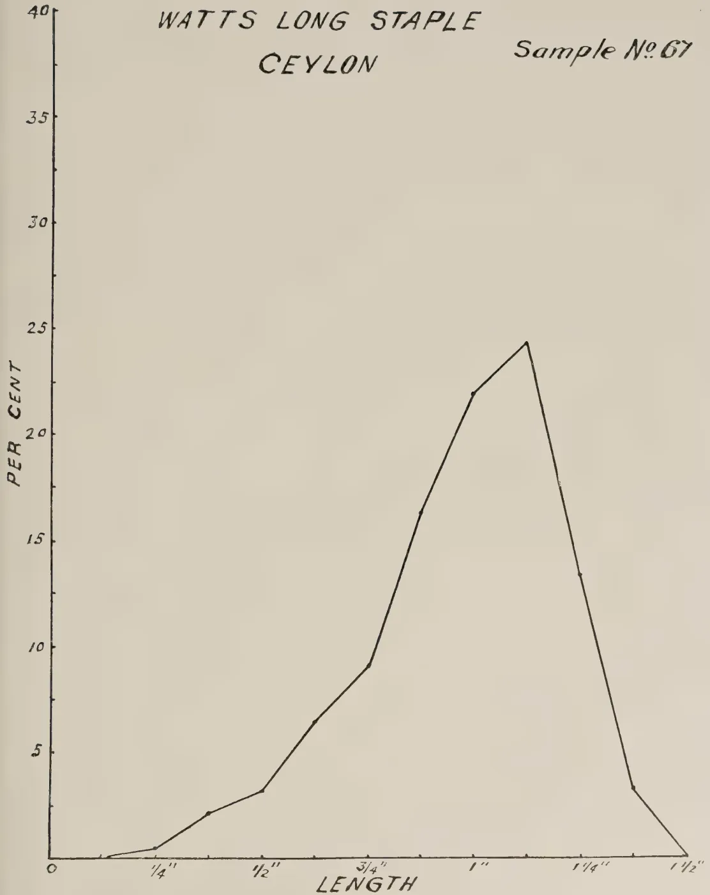
A line graph showing the distribution of lengths for Watts Long Staple Ceylon Sample No 67. The Y-axis is labeled 'PER CENT' and ranges from 0 to 40 in increments of 5. The X-axis is labeled 'LENGTH' and ranges from 0 to 1 1/2 inches. The curve shows a peak at approximately 1 inch.
| Length (inches) | Percentage (%) |
|---|---|
| 0 | 0 |
| 1/8" | 0 |
| 1/4" | 0.5 |
| 3/8" | 2.5 |
| 1/2" | 3.5 |
| 5/8" | 6.5 |
| 3/4" | 9.5 |
| 7/8" | 16.5 |
| 1" | 22.0 |
| 1 1/8" | 24.5 |
| 1 1/4" | 13.5 |
| 1 1/8" | 3.5 |
| 1 1/2" | 0 |
[Faint page: no legible print of its own could be verified; text withheld (stage 4 review list)]
This image is a scan of a blank page. The paper has a light beige or cream-colored tint. There are a few very small, dark specks scattered across the surface, which appear to be scanning artifacts or dust particles. No text, lines, or other markings are present on the page. FEBRUARY, 1926.]113J. ALFARO,
Administrator, Central Portucalete, Palmira, Cuba.
Heretofore the processes generally used for fighting the Mosaic disease consisted of the following :
In selecting cane seed, even when very carefully carried out, the infested seed cannot be avoided, because stools which often seem entirely sound, have nevertheless contracted the disease, which will naturally be reproduced in the new plant.
When infested stools are pulled out, although it was the most advisable method, provided that the disease was not higher than 5 per cent., no practical results can be promised because the infection would be worse in a secondary form, that is transmitted by insects, than the one produced by infected seed ; therefore, the process lacks efficiency.
The use of cane varieties which are resistant to Mosaic would be advisable since they promise good results, but up to the present date there is not a variety which could be considered as very resistant to Mosaic disease and at the same time be rich in sucrose ; therefore, to generalize the plantations of varieties which are now known for this purpose would be equivalent to reducing the yield in sugar houses, and this is against our economical principles.
In view of these circumstances and for our own interest, we have devoted some time to the study of the best form of fighting Mosaic and the efforts of our investigations have culminated in some successful results.
In fact, we have proven that not only canes, but many other plants contain this disease ; therefore, the most serious infection is the secondary one, that is, the one transmitted by insects that feed on these plants. While studying the lives of these insects we found out that they develop precisely in Spring, that is, from March to July, and for this reason plantations are badly attacked at this time of the year by insects which categorically transmit or inoculate the disease. During Autumn these insects which are in the form of eggs and could not be found in another form (more logically) at this time because it is then that the plants on which they feed themselves begin to die, also die on account of lack of proper food.
After these principles had been established, we proceeded to investigate the Autumn plantations (cold weather cane) by using this cane as seed, and also ratoan cane.
The result, 0 per cent. infection in plants coming from cane seed of cold weather plant cane, and 7.3 per cent. infection in furrows where ratoan cane seed was used,
114[FEBRUARY, 1926]It was clearly shown that cold weather plant cane used as seed was found to be entirely free from Mosaic, and this is logically explained by the fact that when the transmitting insect developed itself, the plant was sufficiently grown up and its leaves were strong enough to resist the attack from the insects, while the ratoan cane, whose disease was latent, contracted it since the cutting of same took place in April, the time when the insects attain their development and the tender ratoons were an easy prey as food for them; consequently the seed obtained from these ratoons had to naturally yield a plant infected with Mosaic.
These experiments were repeated in five blocks with identical results and finally the resistance of this cold cane against Mosaic remained clearly shown when we observed that in 49 caballerias and 229 cordeles of land planted with cold cane in 1924 and distributed among 102 cane fields in or round about the infested zone, not one stool had shown to be infected with this disease.
In short, the results of our investigations guide us to the following conclusions:—
1st. That transmission through insects is much more serious than through the seed used.
2nd. That transmission through insect does not take place during the time of the year when these insects are found in the form of eggs.
3rd. That since the time of their development is precisely during Spring, a season in which the adventitious plants develop and their sap constitutes a food for the insect, these plants must be destroyed, not only in the cane fields, but also those which grow in the cane alleyways, and cane planting must be avoided at this time, so as to prevent feeding the insects, and
4th. That since it is in Autumn that these insects are not active (being in the form of eggs), this is the proper time to plant cane; therefore in Cuba no other canes should be sown but cold weather plant canes, in order to count upon the best method of fighting the Mosaic disease.—The Planter and Sugar Manufacturer, Vol. LXXV, No. 20.
The following extract is taken from the article on "Brief Review of the Activities of the Bureau of Agriculture, Philippine Islands, for the year 1924, in the Philippine Agricultural Review, Vol. XVIII, No. 3
In January, 1924, a cable from the Naval Governor of Guam, through the Naval Commander at Cavite, was received requesting the Bureau of Agriculture to send predators and parasites to Guam for the control of a coconut scale insect (Aspediotus destructor), which was said to be menacing the coconut industry in that island. The first shipment, which consisted of three species of three predatory Coccinellid beetles; namely, Cryptogunus orbiculus, Sticholalis banksi and Aspidemerus tristis, and a parasitic hymenopterous insect, unidentified, was sent to Guam May 3, 1924, and another shipment was sent August 7.
FEBRUARY, 1926.]115TRADE MARK 'TABLOID' BRAND
Provides everything necessary in an emergency
Designed with an intimate knowledge of the requirements of residents in the tropics, this comprehensive Case is of the utmost value to Planters and others at a distance from medical aid.
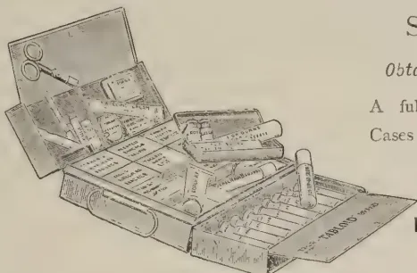
Size: in.
Obtainable at all Chemists and Stores
A full range of First-Aid and Medicine Cases at all prices. Particulars on request.
BURROUGHS WELLCOME & CO.
LONDON
All Rights Reserved
xr 4373
Reduced from size
Minutes of the twenty-seventh meeting of the Estates Products Committee of the Board of Agriculture held at the School of Tropical Agriculture, Peradeniya, at 2-30 p.m., on Thursday, January 7th, 1926.
Present.—The Director of Agriculture (Chairman), the Government Entomologist, the Government Mycologist, the Government Agricultural Chemist, Sir Solomon Dias Bandaranaike, Messrs. A. H. Reid, C. B. Loudon Shand, Wace de Niese, Graham Pandittasekera, J. E. P. Rajapakse, R. P. Gorton, C. C. du Pré Moore, E. C. Villiers, J. W. Oldfield, R. G. Coombe, J. Horsfall, D. S. Cameron, H. W. Roy-Bertrand, A. T. Sydney Smith, H. B. Daniell, N. G. Campbell, J. B. Coles, H. D. Garrick, Geo. Brown, S. P. Blackmore, A. M. Reeve and T. H. Holland (Secretary).
As Visitors.—Messrs. Felix R. Dias, S. J. F. Dias, F. P. Jepson, M. Park, G. R. Hilson, Huntley Wilkinson and G. A. C. Wyllie.
Letters and telegrams regretting inability to attend were received from the Controller of Revenue, Gate Mudaliyar A. E. Rajapakse, Messrs. C. E. A. Dias, J. D. Dunlop, E. W. Keith, H. L. de Mel, H. Scott and A. S. Long Price.
116[FEBRUARY, 1926]The Minutes of the last meeting, having been circulated to members, were taken as read and confirmed.
Agenda Item 1—Progress Reports of the Experiment Station, Peradeniya, for the Months of September and October,—November and December, 1925.
The Chairman briefly reviewed these reports. Referring to Bunchy-top in plantains he said that it had now been ascertained in Australia that Bunchy-top was a virus disease transmitted by Aphides. Dr. Gadd had written an article embodying all the available information and this would be published in the Tropical Agriculturist.
Mr. Brown commented on the high cost per acre estimated for filling decayed tea bushes with Plascom.
Mr. Holland remarked that the cost was calculated from the treatment of only a few bushes but that the cost of the material was high in this case.
A Member referring to the difficulty in establishing Indigofera endecaphylla in old rubber enquired whether a similar difficulty was found in establishing the crop in tea.
Mr. Holland replied that this was not so, the crop was, on the whole, coming on very well in tea.
Mr. Oldfield enquired if the Dadaps and Gliricidia referred to were of the same age.
Mr. Holland replied in the affirmative.
Agenda Item 2—Roselle Fibre Results.
The Chairman referred to the London report on samples of this fibre and remarked that at the present exceptionally high prices the crop would appear profitable.
Agenda Item 3—The Importation of Tea Seed from Java.
The Chairman after giving information as to pests which might possibly be introduced in tea seed asked the opinion of members as to whether certificates should be demanded with all seed imported from Java.
Mr. Oldfield said that the Planters Association had not yet been consulted but he was of the opinion that if the certificates were of sufficient value they should be asked for.
The Chairman said that if the Java examination of tea seed was as thorough as that he and the other Ceylon visitors had recently seen at Tocklai certificates would be of very considerable value.
The meeting were of the opinion that any measures which tended to reduce the risk of importing pests and diseases were desirable and that certificates should accompany all tea seed imported from Java.
Agenda Item 4—Black Bug in tea.
Mr. R. G. Coombe said that he was bringing up this subject again at the instance of the Superintendent of a large estate. He thought that the pest was on the increase and that steps should be taken to enforce the adoption of the measures recommended by the Department of Agriculture.
Mr. Horsfall referred to the past history of the estate of which he was in charge. He had been apprehensive about the pest in 1916 and 1917 when considerable damage was being done in an area of tea in which
FEBRUARY, 1926.]117all the timber had been cut out. There was now plenty of timber and high shade in that area and the incidence of the pest was negligible. In another case he thought bad drainage was responsible. He found it difficult to give an opinion as to whether alteration of the manurial treatment had affected the incidence of the pest.
Dr. Hutson reviewed the position as regards this pest. There were two scale insects in the Haputale district which after the disappearance of coffee had transferred their attentions to tea, the Green bug and the Brown bug. These were sometimes grouped together and known as Black bug; as a pest they could be considered together. These scale insects generally attacked tea in poor condition but sometimes attacked more vigorous tea.
A long pruning interval enabled the scale to multiply and flourish in the third year. Burning of prunings got rid of the scale insects.
Circulars asking a number of questions had been sent to fifteen estates. Out of the eleven estates that had replied six had reported that the pest was well established, one, that it was established in one field only and four, that the pest was scarcely noticeable and decreasing. One estate had reduced its pruning interval with beneficial results. one had increased its pruning interval and was now suffering from the pest though information as to its previous incidence was not available. Prunings were usually burnt in infested areas. Most estates were alive to the importance of good cultivation and manuring in this connection. Spraying had been tried over small areas but had not been found sufficiently successful to warrant its adoption on a large scale. It seemed unlikely that the pest would ever prove serious but concerted action was desirable and a reduction of the pruning interval seemed the most promising course.
It seemed probable that the scale insects were spread to a certain extent by wind.
Messrs. Coombe and Horsfall dwelt on the heavy infestation of scale insects in the Government water reservation lying between Kahagalla and Roehampton estates. Areas on both these estates which adjoined the reservation were badly affected.
Mr. Horsfall asked Dr. Hutson his opinion on the influence of high shade.
Dr. Hutson said that he had very little information on this point but thought that the scale would probably do better under shade; possibly however the parasitic fungus would do better under shade so that the position would eventually be improved.
Dr. Gadd agreed that shade would encourage the growth of the fungus
The Chairman asked Mr. Coombe if he would bring the subject up at the next meeting. In the interval he would ask an Entomological officer to make a visit to the infested area and endeavour to come to a conclusion on the shade question.
Mr. Coles requested that the officer should also visit the Government Reservation.
Mr. Coombe suggested that the officer should meet the planters at the Haputale Rest-house at the conclusion of his visit. Both these suggestions were agreed to.
118[FEBRUARY, 1926.The Chairman said that the Department had been advocating the use of leguminous cover crops but in view of the lack of general experience as to their effect on young tea and other crops a certain amount of caution was advisable. Mr. Sydney-Smith had some experience in the use of Desmodium and he would ask him to tell the meeting his experiences.
Mr. Sydney-Smith said that the Desmodiums could be divided into the large, medium and small kinds. The larger did not suit most purposes and the smaller formed too close a mat; he therefore generally preferred the medium kinds. The small and medium varieties seemed to grow prolifically up to 2,500 ft. elevation. He had experimented with Desmodiums in mid-country rubber for four or five years before the plants attained their present prominence. His experience was that old rubber was not adversely affected in any way by the presence of Desmodiums. There was undoubtedly competition between the rubber and the Desmodium but this was preferable to erosion. In young rubber his experience was not very favourable. The young plants seemed to be kept back—as they would be in grass. In old tea his experience was limited but he thought that the mat was too close and had a suffocating effect on the tea. In young tea he was convinced that a cover of Desmodium was most harmful. He detailed the experiences of one estate at an elevation of 800 ft. where although soil was most effectively stopped the young tea made no headway. The removal of the Desmodium was expensive but the tea came on well thereafter. He had had similar experiences elsewhere.
Mr. Brown suggested that the proper way to treat the Desmodium would be to turn it into the soil.
The Chairman remarked that if this were done the object of checking soil erosion would not be achieved.
Mr. Coombe suggested that if envelope forking were employed the suffocating effect could probably be countered.
Mr. Gorton said he had had good results in old rubber and his experience was that Desmodium exerted no detrimental effect on the growth of young rubber.
Mr. Blackmore said he had found Desmodiums did well where naturally established but were difficult to establish elsewhere.
The Chairman thanked members who had given the Committee the benefit of their experience. He wished to keep the question of soil erosion continually to the fore as he was convinced that it was of prime importance.
Mr. Oldfield in introducing this subject said he thought there had been a great deal of irresponsible talk on this subject. It was true that birds were scarce on estates but this was chiefly because not enough trees were provided for them to nest in. He thought that if controlled no harm would come of the proposed export of birds to Fiji. Some day a similar measure might be necessary for the prosperity of Ceylon. He felt that the Government had not given the public enough information on the subject.
The Chairman asked Mr. Jepson, who had been in correspondence with Fiji on the matter, to explain the position.
FEBRUARY, 1926.]119Mr. Jepson described from personal experience the devastating damage done by the Levuana Moth in Fiji. He dwelt on the possibility of the pest finding its way to Ceylon and thought that it would be to Ceylon's eventual interest to give every assistance to Mr. Ward. As regards the possible cruelty to the birds, Mr. Ward had had long experience of this work in New Guinea and India; he was to be paid by results, and it did not seem that the question of cruelty need be seriously considered. With regard to Ceylon's need of the birds he did not think the balance of bird life would be seriously disturbed.
Mr. Geo. Brown agreed that the needs of a sister Colony should be sympathetically considered. Caution was however required. In a grain producing country the situation would be different but in vegetative producing areas such as the planting districts he thought it unwise to upset the balance of nature by the removal of insectivorous birds. Very little was known in the East as to the economic value of birds. The export of birds from the uninhabited low-country districts might be possible but would be difficult and costly. The number of birds exported should be limited.
The Chairman said that since the question had been raised in the Legislative Council it had been ascertained that Mr. Ward intended to return to Ceylon and presumably still required specimens of the six species of birds noted by the Fiji Government. These species were.
Of these Nos. 5 and 6 were protected and their export would not therefore be allowed.
In view of the seriousness of the Levuana Moth pest and the possibility of its eventually finding its way to the East he would propose that the meeting should advise Government to co-operate with Mr. Ward to enable him to collect and export not more than 100 specimens of species 1 to 4.
This was agreed to.
Mr. Oldfield said that he had seen some oranges imported from Mediterranean countries on which scale insects were found. He asked if there was not a danger of importing the Mediterranean fruit fly which he understood was a very serious pest. He believed that certificates could be obtained in the country of export 14 days before shipment. It was not to the advantage of the exporting country to discourage trade and he wished to know if the Department of Agriculture considered that such certificates provided an adequate safeguard. He understood that bunchy-top had probably been imported into the Island. He enquired if there were any records of live insects having been found on fruit after fumigation.
Dr. Hutson said that although in the case referred to by Mr. Oldfield the scale insects were dead, live scale insects had been found on imported oranges in Kandy. The present system was that 10% of oranges imported
120[FEBRUARY, 1926.from Mediterranean countries were examined. If this sample was found to be free from pests the rest of the consignment was passed through. He placed no reliance on any certificates from any country, particularly from Italy. The case he had mentioned would be taken up with the Italian authorities.
The Chairman explained that whether accompanied by certificates or not all fruit was examined and if necessary fumigated. No system of legislation or inspection would entirely prevent a country from importing pests. He read an extract from a report by the Ministry of Agriculture in England on this subject. There was no record of insects surviving the fumigation process. The question of a scale infested consignment covered by a certificate would be taken up with the Italian authorities. Mr. J. B. Coles asked if there was any record of plants surviving fumigation.
Dr. Hutson said that four years records showed that 17% of plants arrived at the Fumigatorium dead or moribund; the fumigation was always blamed for the death of the plants.
Agenda Item 8.—What are the most favourable conditions for the growth of Nitrogen fixing Bacteria on Coconut Estates.
Mr. J. E. P. Rajapakse said he was carrying out some experiments as to the relative value of broadcasting and ring manuring of coconuts and desired information as to the most favourable conditions for the growth of nitrogen fixing bacteria.
Mr. Joachim explained that there were two classes of nitrogen fixing bacteria; those found in the nodules of leguminous plants and the azotobacter which fixed nitrogen independently. He explained that in the first case the same bacteria were not found in all leguminous crops. Inoculation of both seed and soils had been tried. Azotobacter were found most plentiful in soils containing plenty of organic matter; aeration was necessary and liming had been found beneficial.
A soil temperature of from 25°C to 30°C was best but this was generally found in Ceylon. Moisture was also required; and the action of these bacteria was stimulated by the presence of Potassium salts and phosphates.
Agenda Item 9.—The Coconut Oil Industry in Java.
The Chairman said that information on this subject had been obtained at the request of Mr. H. L. de Mel. A complete account would be published in the Tropical Agriculturist.
The Chairman then said that he wished to add another item to the Agenda.
The possibility of growing Cashew nuts in certain waste sandy areas in the Batticaloa district had received attention. Samples of nuts had been sent to England for report and that report was now tabled.
At the conclusion of the meeting the Chairman said in place of the ordinary March meeting of the Committee he proposed to organise an Agricultural Conference in that month. The conference would be divided into village and estate agriculture and a session would be set aside for each of the principal crops.
T. H. HOLLAND,
Secretary,
Estates Products Committee.
For the Months of September and October, 1925.
The pruning of all plots except the Half acre, the Hillside and Plot 166 has been completed.
In the 10 plots to be planted up with Indigofera endecaphylla, alternate rows have also been forked. The procedure in these will now be as follows:—
The pruned plots were inspected by the Entomologist. No Calotermes were found.
The small plots laid out for manurial experiments have all been fenced round with wire.
The planting of rubber seed from selected trees on the Experiment Station and from two estates in nurseries for budding operations by officers of the Rubber Research Scheme has been completed.
A very large crop was harvested in October. The harvesting of this crop absorbed most of the labour, to the detriment of other works. Trials have shown that the picking out of broken, discoloured and damaged beans from good cacao for the Colombo market has been in every case profitable.
Experiments have been started to obtain information, or to check existing information, on the following points, with all the coffees grown on the station:—
The areas of all the plots have been checked and their lower boundaries along the river bank marked by permanent land marks.
Plot 160 (1 acre) has been planted with Paspalum scrobiculatum. This grass shows considerable promise.
Buffalo grass, Setaria sulcata is making excellent growth.
122[FEBRUARY, 1926.The work in area A is nearly completed. A fall of 3.65 inches of rain in two hours on October 23rd, resulted in a landslide and the collapse of one of the silt pits.
acre plot of this fibre was cut in October and the fibre extracted after retting for 10 days. The growth of the plot was poor and patchy and the yield of clean fibre amounted to 228 lb., or 912 lb. per acre. The last yield obtained in 1924 was 796 lb. of clean fibre per acre. In 1923 in a different part of the Station yields of 1,617 and 1,970 lb. per acre were obtained.
In an endeavour to reduce the cost of extraction which resulted, at figures then quoted for the produce, in the 1924 crop being produced at a loss, the operation of scraping the fibre with a piece of coconut shell was dispensed with on this occasion. In spite of this however the cost of harvesting, retting and extraction amounted to Rs. 127.20 per acre.
Samples have been sent to London and Calcutta for report and valuation but it is anticipated that a loss will be sustained in this case also.
The costs could with experience be reduced, but it would at present appear that a yield of over 1,000 lb. per acre is essential for profitable cultivation.
Full figures will be published when the reports and valuations of the fibre come to hand.
The revenue for the financial year 1924-25 amounted to Rs. 33,546.44 exclusive of the value of seeds, etc., supplied to other divisions of the department amounting to Rs. 600.68.
The previous highest revenue was Rs. 25,171.14 in 1922-23.
The revenue and expenditure (exclusive of monthly salaries) on the different crops was as follows :—
| Expenditure. | Revenue. | Profit. | Loss. | |
|---|---|---|---|---|
| Rs. cts. | Rs. cts. | Rs. cts. | Rs. cts. | |
| Tea | 4,269' 70 | 9,809' 64 | 5,839' 94 | — |
| Rubber | 3,225' 42 | 10,517' 15 | 7,291' 73 | — |
| Cacao | 2,157' 13 | 4,965' 89 | 2,808' 76 | — |
| Coconuts | 861' 68 | 2,111' 08 | 1,249' 40 | — |
| Coffee | 940' 49 | 1,210' 01 | 269' 52 | — |
| Other items | 20,901' 66 | 4,932' 67 | — | 15,968' 99 |
| Total | 32,446' 08 | 33,546' 44 | 1,100' 36 | 15,968' 99 |
A severe drought was experienced in September, no rain falling between August 30th and September 21st.
T. H. HOLLAND,
Manager,
Experiment Station,
Peradeniya.
For the Months of November and December, 1925.
All pruning has been completed, except the small plots under Ammophos experiment which are to be left till January 1st.
The pruning mixture of 100 lb. Basic slag and 60 lb. Sulphate of Potash has been applied in the usual manner. Except for plots 144, 150 and 155, which have been sub-divided for the new manurial experiments, all the old tea, and in addition plots 163 and 164, have been planted up with Indigofera eudzaphylla. Clumps of cuttings were planted 2 ft. apart up every row making 5,444 clumps per acre. Each clump contained from 2 to 4 cuttings. Including the cutting and transport of the cuttings over about half a mile the cost of this planting amounted to Rs. 5.23 per acre, exclusive of the value of the cuttings. Almost all the cuttings have struck well except in two plots which were planted in somewhat drier weather : these two plots were replanted in December. The cuttings for planting 10 acres were all obtained from an area of about 1/7th acre.
In every case where tea is growing under Gliricidia alongside tea under Dadaps, the tea under the Gliricidia is looking distinctly more vigorous. This may be mainly ascribed to the superior growth of the Gliricidia and the greater weight of green material afforded.
Labour was not available for any extensive trials in this connection after completion of the pruning. A few small preliminary trials were made on 32 selected bushes in plot 155.
To clean the bushes three small tools were designed.
(1) A spear-headed implement to loosen decayed wood and earth, (2) a broad flat hook for removing this material from large cavities. (3) a narrow flat hook for use in small cavities. These implements proved fairly satisfactory.
The operation was exceedingly tedious : to thoroughly clean the 32 bushes took a podian 12 hours—nearly 23 minutes per bush. In a further trial an average of 20 minutes per bush was taken. With a cooly at 45 cents, therefore, if 50% of the bushes of an acre of 2,722 bushes needed cleaning, the cost of cleaning would be Rs. 26.60 per acre.
After cleaning, a trial with the following substances was made :
(1) Skene's enamel wax and Tar.—1 lb. wax, 3 gls. tar. As this mixture is applied liquid it cannot be used for filling cavities, and the drainage of all cavities, usually by cutting a V-shaped excision with a saw or chisel, is necessitated. The extra time spent in this work, however, is more than compensated for by the time saved by applying a liquid mixture as against a solid filling. Costs of this treatment are given in Mr. Skene's booklet entitled "Borer and Canker in Tea." The total costs for cleaning, draining cavities, cost of tar and wax and application is estimated at Rs. 3.75 if 33% bushes require treatment, Rs. 7.16 if 66%, and Rs. 10.30 if 100%. The estimated cost of cleaning bushes however seems very low.
(2) Mexphalte, E. grade mixed with sawdust.—This mixture was tried on the recommendation of the Mycologist of the Rubber Research Scheme. A satisfactory mixture was made of two-thirds of Mexphalte by weight and one-third dry sawdust. The Mexphalte has first to be melted and
124[FEBRUARY, 1926.the sawdust stirred in while hot. The mixture, which can be used when cool enough to handle, is somewhat sticky, and a vessel of water must be kept by the cooly to dip his fingers into to prevent them sticking to the material. It was found necessary to heat up the mixture from time to time. On the bushes treated it was found that about lb. of Mexphalte (with the addition of sawdust) was sufficient for one bush.
It took an average of 5 minutes per bush to fill the cavities. Mexphalte is obtainable from Messrs. Delmege, Forsyth & Co. at 70 cts. per gallon. This is equivalent to a price of 6 cts per lb. or Rs. 7.35 per cwt. The mixture sets fairly hard in a few hours but gets slightly soft in hot sun.
Working again on the basis of a cooly @ 45 cents actually working 8 hours per day and 50% of the bushes in an acre of 2,722 bushes requiring treatment, the following cost is arrived at:—
| Cleaning 1,361 bushes per acre | ... | ... | Rs. | 26.60 |
| 681 lb. of Mexphalte @ Rs. 7.35 per cwt. | ... | .. | „ | 44.73 |
| Application (102 bushes per cooly per day) | ... | .. | „ | 6.00 |
| Total per acre. | ... | .. | Rs. | 77.33 |
No charge has been made for sawdust.
(3) Mexphalte, plain
This was found to be useless as a filling, it is liquid when hot and becomes too sticky to handle on cooling.
(4) “Plascom” and liquid fuel.
This is a solid substance which, when melted down, mixed with liquid fuel, and partially cooled forms a plastic material which is easily moulded and does not stick to the fingers. 8 lb. of Plascom to one pint of liquid fuel was found to be a serviceable mixture. It was found necessary to heat up the material again about every half hour to keep it sufficiently plastic. After a few hours the material gets absolutely hard, leaving a smooth shining surface. If durable this appears to provide an ideal filling material. 8 lb. of Plascom (with 1 pint of liquid fuel) sufficed for 7 bushes in this case, so that a little less than 1 lb. per bush is required. The time taken to treat a bush in this instance averaged 10 minutes against five minutes for the Mexphalte and sawdust; the extra time was due to the necessity for more frequent heating up of the mixture; the actual filling was quicker and easier with Plascom.
Plascom can be obtained from Messrs. Hunter & Co., at Rs. 12.50 per cwt.
Working on the same basis the cost per acre might be estimated as follows:—
| Cleaning 1,361 bushes per acre | ... | ... | ... | Rs. | 26.60 |
| 1,191 lb. Plascom @ Rs. 12.50 per cwt | ... | .. | .. | „ | 132.91 |
| 16 gls. liquid fuel „ „ 9.75 per 40 gl. drum | ... | .. | .. | „ | 3.90 |
| Application, 27 coolies „ „ 45 cents | ... | .. | .. | „ | 12.15 |
| Total per acre | ... | .. | .. | Rs. | 175.56 |
(5) Plascom and sawdust.
This mixture was found to be quite useless as it rapidly dried into hard lumps which could not be manipulated.
These estimated costs are taken from trials on a small number of bushes and need confirming over large areas. The durability of the various substances can only be reported on after a lapse of time. The question of the relative benefit from (a) draining cavities and painting on a liquid water-proof coating such as Skene's wax and tar and (b) filling all cavities with some solid material also needs observation over a considerable period of time. There can be no question that the former is very much cheaper.
FEBRUARY, 1926.]125Small blocks of various cover crops were again planted on a well drained slope in deep shade under old rubber early in July. On account of the dry spell in that month they were replanted in August.
The blocks are planted with
On December 1st the following notes were made :—
Indigofera endecaphylla. Most of the cuttings are dead. A very few area alive and the plants are growing straight up towards the light. There is no creeping growth.
Centrosema pubescens. Only 3 or 4 cuttings are alive and these are making no headway.
Centrosema Plumieri. Only one cutting alive.
| Vigna oligosperma | } | Complete failure |
| Phaseolus calcaratus | ||
| Pueraria phaseoloides | ||
| Desmodium heterophyllum | ||
| Desmodium triflorum | ||
| Calapogonium mucunoides |
It should be mentioned that attempts to establish Pueraria phaseoloides from cuttings in the open have failed while Phaseolus calcaratus has not been found easy to establish by this method. With the exception of Vigna the other plants have all been easily established in the open by the same methods of propagation.
The autumn crop has been exceptionally heavy and its harvesting has absorbed a large amount of labour.
The small experiment plot 140E in which comparison is made between (1) cattle manure and forking, (2) plain forking, (3) mulching with Dadap leaves, received its annual treatment in December.
In November 1923 a small experiment was started which was designed to test the value of a preventative treatment against bunchy-top advocated by a Queensland grower. The suckers were taken from healthy trees but from an area in which bunchy top had occurred.
One row each of 10 varieties of plantains were planted. The area was divided cross ways into three strips : one was treated with lime, concentrated superphosphate and sulphur, one with the same mixture without the sulphur and one was left as control. Bunchy-top appeared in 6 out of the 10 varieties apparently without regard to the treatment. In February 1925 the treatment was repeated and the same varieties replanted in the same rows as before, suckers being taken from healthy plants in the same plot. It has now been apparent for some months that there is not a single case of bunchy-top in the whole plot and all the plants are long passed the stage at which the disease is contracted. It is now intended to see if any of the suckers from these plants will develop the disease.
126[FEBRUARY, 1926.A small block of Hibiscus sabdariffa, var altissima was sown in with a minimum of cultivation on a slope of poor quartz soil in plot 152. The plants flowered after 4 months; the growth was then very poor the plants being only 3 to 4 ft. high. This tends to confirm the view that a good soil is required and probably thorough cultivation.
56 lb. of the fibre was put up for sale at the Experiment Station auction in December; the only bid was at the rate of Rs. 2/- per cwt.
An experiment has been undertaken by the Agricultural Chemist in plot 25. The plot, which has been under a thick growth of illuk for the past seven years, was finally cleared in October, and in November was divided into 40 plots of 1/100th acre each.
During the first week of December the following treatments were applied:—
The object of the experiment is to determine the rate at which the products of the decomposing green material become available as plant food. Soil samples were taken at the time of application of the green materials and subsequently at regular intervals. Samples of the green loppings were also sent for analyses.
A quarter acre plot of Tephrosia candida sown in drills 3 ft. apart in 1923 has yielded 15 tons of green material per acre in four loppings during 1925.
Nine varieties of South Indian groundnuts were dug in November. The most promising will now be tried on a larger scale.
Fourteen varieties of yams were dug in December. Yield records over 5 years are now available and a report will be issued.
A 1/10th acre plot in the Economic collection yielded a crop of 300 lb. of dried seed equal to 3,000 lb. per acre. A consignment of seed has been sent to London for valuation and report. Seed has been sold locally at 10-12 cts. per lb.
Forking of couch and illuk has got in arrears owing to pressure of other work. Weeding is also in arrears.
The rainfall up to the end of November was 98.57 inches. The annual average is about 89 inches.
T. H. HOLLAND,
Manager,
Experiment Station, Peradeniya
FEBRUARY, 1926.]
127
(FROM THE CEYLON CHAMBER OF COMMERCE WEEKLY PRICE CURRENT, DATED 18th JANUARY, 1926.)
| NAME OF PRODUCE | CURRENT PRICE | REMARKS | |||
|---|---|---|---|---|---|
| Rs. | Cts. | at | Rs. | Cts. | |
| CACAO—(At Buyer's Stores) | |||||
| Estate—Finest | ... | ... | ... | 42 | 00 |
| Do Medium | ... | ... | ... | 35 | 00 |
| Do Common (Black) | ... | ... | ... | 10 | 00 |
| ... | ... | ... | ... | 25 | 00 |
| CARDAMOMS— | |||||
| All round parcel well bleached | ... | ... | ... | 3 | 80 |
| Do do medium | ... | ... | ... | 3 | 90 |
| Special assortment 0 & 1 only | ... | ... | ... | 3 | 75 |
| Seeds | ... | ... | ... | 4 | 00 |
| Green | ... | ... | ... | 3 | 25 |
| ... | ... | ... | ... | 2 | 20 |
| CINNAMON QUILLS—(At Buyer's Stores) | |||||
| Ordinary assortment (in bales of 100 lb. nett) | ... | ... | ... | 1 | 04 |
| No. 1 | ... | ... | ... | 1 | 08 |
| No. 2 | ... | ... | ... | 1 | 11 |
| No. 3 | ... | ... | ... | 1 | 09 |
| No. 4 | ... | ... | ... | 0 | 97 |
| ... | ... | ... | ... | 0 | 96 |
| CINNAMON CHIPS—Maradana, (At Buyer's Stores) (in bags of 56 lb. nett) per candy of 560 lb. | |||||
| ... | ... | ... | ... | 90 | 00 |
| ... | ... | ... | ... | 100 | 00 |
| CITRONELLA OIL—(ex-Seller's Stores without packages) | |||||
| ... | ... | ... | ... | 1 | 15 |
| ... | ... | ... | ... | 1 | 20 |
| COCONUT—(Desiccated) Granulated goods (Delivered at Wharf or Buyer's Stores) | |||||
| Assortment: Medium 50 per cent. Fine 50 per cent. | ... | ... | ... | 0 | 19 |
| ... | ... | ... | ... | 0 | 19½ |
| COCONUT OIL— | |||||
| White Oil f.o.b | ... | ... | ... | 557 | 50 |
| Ordinary Oil do | ... | ... | ... | 545 | 00 |
| ... | ... | ... | ... | 547 | 50 |
| COPRA— | |||||
| Calpentyn No. 1 quality | ... | ... | ... | 79 | 75 |
| Estate per candy of 560 lb. | ... | ... | ... | 80 | 75 |
| Ordinary quality (Maravila) | ... | ... | ... | ||
| Cart Do do | ... | ... | ... | ||
| HAMBRES—(At Buyer's Stores) | |||||
| Coconut Bristle No. 1 | ... | ... | ... | 6 | 75 |
| Do No. 2 | ... | ... | ... | ||
| Coconut Mattress No. 1 | ... | ... | ... | 7 | 75 |
| Do No. 2 | ... | ... | ... | 2 | 40 |
| Coir Yarn, Kogalla Nos. 4 to 9 | ... | ... | ... | 9 | 00 |
| Do Colombo Nos. 3 to 7 | ... | ... | ... | ||
| ... | ... | ... | ... | 22 | 00 |
| PLUMBAGO | |||||
| Ordinary Lumps | ... | ... | ... | 300 | 00 |
| Chips | ... | ... | ... | 400 | 00 |
| Dust | ... | ... | ... | 225 | 00 |
| Do Flying | ... | ... | ... | 195 | 00 |
| ... | ... | ... | ... | 350 | 00 |
| ... | ... | ... | ... | 275 | 00 |
| ... | ... | ... | ... | 150 | 00 |
| ... | ... | ... | ... | 125 | 00 |
| ... | ... | ... | ... | 390 | 00 |
| ... | ... | ... | ... | 310 | 00 |
| ... | ... | ... | ... | 210 | 00 |
| ... | ... | ... | ... | 150 | 00 |
| ... | ... | ... | ... | 220 | 00 |
| ... | ... | ... | ... | 200 | 00 |
| ... | ... | ... | ... | 100 | 00 |
| ... | ... | ... | ... | 90 | 00 |
| ... | ... | ... | ... | 300 | 00 |
| ... | ... | ... | ... | 225 | 00 |
| ... | ... | ... | ... | 180 | 00 |
| ... | ... | ... | ... | 100 | 00 |
128
FEBRUARY, 1926
METEOROLOGICAL
JANUARY, 1926.
| Station | Temperature | Mean Humidity % | Mean amount of Cloud 10=overcast 0=clear |
Mean Wind Direction during Month | Daily Mean Velocity | Rainfall | Difference from Average | ||
|---|---|---|---|---|---|---|---|---|---|
| Mean Daily Shade | Difference from Average | Amount | No. of Rainy Days | Inches | |||||
| Colombo Observatory | 79.4 | +0.4 | 76 | 5.0 | NNE | 102 | 2.51 | 9 | - 0.99 |
| Puttalam | 78.3 | +0.9 | 73 | 2.6 | NNE | 121 | 2.15 | 7 | - 0.61 |
| Mannar | 79.5 | +0.7 | 79 | 4.8 | NE | 197 | 3.44 | 10 | + 0.68 |
| Jaffna | 78.0 | +0.6 | 77 | 5.4 | ENE | 79 | 2.39 | 8 | - 0.20 |
| Trincomalee | 79.4 | +0.7 | 77 | 5.9 | NE | 171 | 12.30 | 14 | + 5.73 |
| Batticaloa | 78.1 | +0.3 | 82 | 5.4 | N | 185 | 16.90 | 10 | + 6.67 |
| Hambantota | 78.7 | +0.3 | 80 | 4.4 | ENE | 276 | 7.45 | 8 | + 4.00 |
| Galle | 79.4 | +1.2 | 83 | 5.2 | Var. | 112 | 2.28 | 9 | - 2.01 |
| Katnapura | 80.5 | +0.7 | 73 | 5.0 | — | — | 2.49 | 8 | - 2.88 |
| Anu'pura | 76.6 | +0.1 | 80 | 5.4 | — | — | 4.00 | 11 | - 0.01 |
| Kurunegala | 77.6 | -0.4 | 76 | 5.0 | — | — | 2.96 | 10 | - 0.77 |
| Kandy | 75.1 | +0.6 | 74 | 5.8 | — | — | 2.35 | 9 | - 2.88 |
| Badulla | 69.6 | -0.6 | 83 | 5.6 | — | — | 7.89 | 13 | - 1.80 |
| Diyalawala | 64.0 | -0.6 | 80 | 6.0 | — | — | 3.80 | 12 | - 2.35 |
| Hakgala | 59.7 | +2.7 | 83 | 5.5 | — | — | 11.88 | 15 | + 2.14 |
| N. Eliya | 58.0 | +0.6 | 74 | 5.6 | — | — | 5.89 | 9 | + 0.16 |
The rainfall of January was above average at most of the stations near the east and south-east coasts, and was also slightly above average at a few in the low country on the west and south-west. Over the remainder of the island, comprising about two-thirds of the whole, the commonest variations were small deficits. Deficits of more than 5 inches were however frequent on the eastern side of the central province. The highest totals for the month were 24.7 and 23.5 inches at Hendon and St. Martin's both of which are considerably below their own averages.
The chief periods during which rain fell were from the 6th to 8th and from the 23rd to the end of the month. The latter period included several falls of over five inches in a day notably on the 23rd when St. Martin's and Hendon had over 8 inches each and Unichchai over 7 inches.
As will be seen from the table, mean temperatures work out in most cases to above average. There were however some decidedly low night temperatures measured up-country during the fine periods. The Nuwara Eliya minimum in air on the 21st was 30.8° but there were several other days on which though the minimum in air was just above 32°, the minimum on grass was below freezing point. Humidity was below average in almost every case.
A. J. BAMFORD,
Supdt. Observatory.
ANIMAL DISEASE RETURN FOR THE
MONTH ENDED 31st JANUARY, 1926.
| Province, &c. | Disease | No. of Cases up to date since Jan. 1st, 1926 | Fresh Cases | Recovered | Deaths | Bal- ance III | No. Shot |
|---|---|---|---|---|---|---|---|
| Western | Rinderpest | — | — | — | — | — | — |
| Foot-and-mouth disease | 3 | 3 | 3 | — | — | — | |
| Anthrax Rabies | 5 | 5 | — | 3 | — | 2 | |
| Colombo Municipality | Rinderpest | — | — | — | — | — | — |
| Foot-and-mouth disease | — | — | — | — | — | — | |
| Anthrax Rabies | — | — | — | — | — | — | |
| Cattle Quarantine Station | Rinderpest | — | — | — | — | — | — |
| Foot-and-mouth disease | 99 | 50 | — | 99 | — | — | |
| Central | Rinderpest | — | — | — | — | — | — |
| Foot-and-mouth disease | 1 | 1 | — | — | — | — | |
| Anthrax Rabies | 1 | 1 | — | 1 | — | — | |
| Southern | Rinderpest | 250 | 220 | 3 | 190 | — | 27 |
| Foot-and-mouth disease | — | — | — | — | — | — | |
| Northern | Rinderpest | Free | — | — | — | — | — |
| Foot-and-mouth disease | — | — | — | — | — | — | |
| Eastern | Rinderpest | 613 | 613 | — | — | — | — |
| Foot-and-mouth disease | — | — | — | — | — | — | |
| North-Western | Rinderpest | 20 | 20 | — | — | 10 | — |
| Foot-and-mouth disease | — | — | — | — | — | — | |
| North-Central | Rinderpest | — | — | — | — | — | — |
| Foot-and-mouth disease | — | — | — | — | — | — | |
| Uva | Rinderpest | 23 | 23 | 11 | — | 12 | — |
| Foot-and-mouth disease | 1 | 1 | — | 1 | — | — | |
| Sabaragamuwa | Rinderpest | 37 | 37 | — | 18 | 6 | 13 |
| Foot-and-mouth disease | — | — | — | — | — | — | |
| Anthrax | — | — | — | — | — | — | |
| Anthrax | — | — | — | — | — | — |
G. W. STURGESS,
Government Veterinary Surgeon.
* a horse
Colombo, 8th February, 1926.